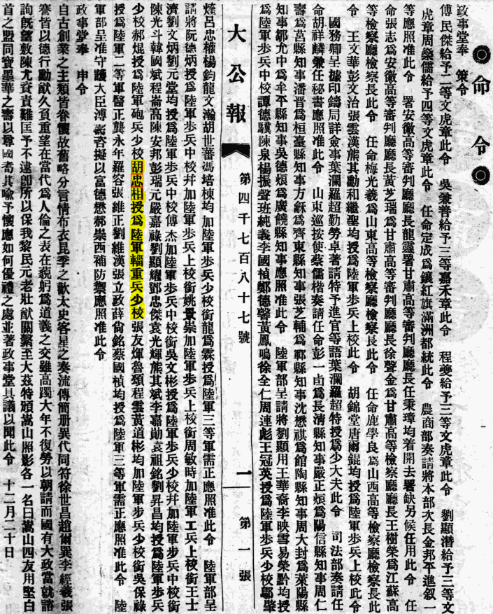
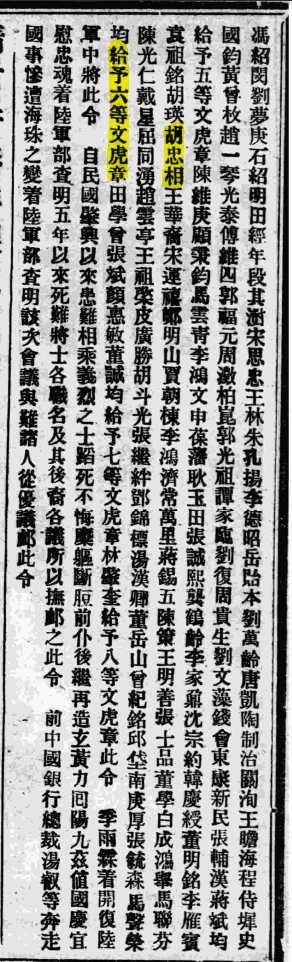

胡忠相, 胡公馆相关信息
相关图片 / 视频
民间故事
1917年7月，护国战争的硝烟尚未散去，军阀张勋在北京又上演了复辟的闹剧。而此时，川军刘存厚与黔军戴戡的战火也愈演愈烈，西南边陲硝烟弥漫，无数家庭在生与死中苦苦挣扎，在血与泪中流离失所…… 一天，一阵车马的喧哗打破了清晨的宁静，黔北小镇虾子街头迎来了一群神秘的客人。近百名手持长枪腰挎短匣的军人，行色匆匆赶着十多辆马车。马车驶过，车轮在街头的石板上发出沉重而低闷的声音。很显然，车中载满了辎重物资。军士们神色疲倦，满身尘土，衣服上的弹孔仍历历在目，这无疑是一支刚从前线归来的部队。一位身穿长袍马褂、神情自如的中年男人从马车上跳下，几个乡绅忙将其迎接至房中窃窃私语，内容世人不得而知 ... 而后十年间，在虾子镇外一个名叫乐石台的小地方，一座略带西洋风格，而又以传统风韵为主的乡间豪宅逐渐展现在人们眼前
...
胡公馆落成后，和胡忠相有师生之谊，时任贵州省主席兼二十五军军长周西成曾书贺“陆军少将第”金字黑漆巨匾，庄园主人则自名为“怡庐”
胡忠相
生平
胡忠相（1871年10月25日－1945年5月31日）, 字獻之（献之, 宪之），贵州遵義禹门人
胡獻之先生近照 辛未(1931)四月題于渝城
1906入保定陆军军官学堂 / 北洋陆军速成学堂第一期， 1909年毕业，1910年获輜重科上等照章
1911年，保定军校速成毕业生桐梓赵文彬、遵义胡忠相在黔北招兵
1915年12月 授爲陸軍輜重兵少校
1916年01月 任貴州陸軍歩兵第六團團附
1916年1-3月 作为貴州陸軍歩兵第六團代團長参与讨袁护国战争，任护国军（司令蔡锷）滇黔联军右翼军（司令戴戡）右支队指挥
护国战争(1915年12月～1916年6月)之綦江之战(1916年2～3月)
綦江之战(1916年2～3月)
作者：汇感之舟 时间：2016/4/24 11:20:14 阅读：次 类别：中国战争史地图集
1916年2至3月，护国战争中，贵州护国军第1军右翼军进攻四川綦江的作战。
1916年1月27日，贵州独立，都督刘显世将部分黔军与云南护国军徐进纵队一部编为护国军右翼军，下辖3个支队，拟攻綦江，进取巴县(今重庆)。2月3日，右翼军由贵阳出发。14日，熊其勋率左支队攻占川边天险九盘子，继克大沙沟、赶水、东溪等要地。
至此，护国军攻取綦江、进窥巴县的作战计划，终因兵力薄弱和没有集中兵力歼敌而未能实现。
1916年10月, 获得四等文虎章一枚，六等文虎章一枚
1917年02月, 任暫編貴州混成旅步兵第二團團長，同年7月参与讨伐张勋复辟的护法战争（滇黔川大战）
1918年 調任黔軍第二師參謀長（未找到正式公文确认）
1925年11月 授爲陸軍眩時執攻令
1929年 (民国 18 年)筹办电厂未果
1937年 担任遵义县老残救济院首任院长
1940年 作为遵义士绅代表协助竺可桢浙大西迁贵州
1941年 邀丰子恺担，赵迺康（恺）等同游子午山。 并协助出版 《子午山纪游册》，由赵迺康、丰子恺、李瑜三人编辑，以遵义孤儿所为发行印刷单位
子午山纪游册
子午山纪游册1941年11月响应[一元献机]运动，倾以其寿仪（70寿辰）两千元全数捐献，县府呈请予以嘉奖
胡忠相是是沙滩文化润育的一代英才，除了他参加辛亥革命、倒袁护国的军旅生涯，他还长期从事福利救助等社会活动，他告老还乡后依然崇尚沙滩文化，长期出资对郑珍、莫友芝、黎庶昌的墓地进行修缮保护，他于1945年去世，享年74岁。
政令、公報
政治官报 宣统二年 (1910) 五月
page 68 ... 胡忠相 以上三十四名考列輜重科上等照章 ...
... 瀕杜生玉周元愷謝仲安楊燦趙以清郭桂麟舒任復王澄清席鴻鑫鈕守淇任檯國武修
朱元亮陳日諜到葆業李文旗王宗文袁士驟管翔鴻
政事堂奉 策令 [19548], 1915/12/22
 大公報天津版 命令, 02版
大公報天津版 命令, 02版
... 胡忠相 授爲陸軍輜重兵少校 ...

政事堂奉 策令 [1718], 1916/01/23
大公報天津版 命令, 02版
... 陸軍部奏請任命胡忠相 署貴州陸軍歩兵第六團團附應照准此令 ...
命令補登 [20130], 1916/10/12
, 大公報天津版, 06版
... 袁祖銘胡瑛胡忠相 王華... 給予六等文虎章 ...

命令 [20882], 1916/10/21
, 大公報天津版, 02版
... 李雁賓袁祖銘胡瑛盧燾胡忠相 熊其斌袁光輝王華裔均晋給四等文虎章此令 ...
大總統令 [3083], 1917/02/06
大公報天津版 命令專電, 02
... 任命袁祖銘...胡瑛...何應欽...谷正倫...袁光輝...胡忠相 爲暫編貴州混成旅步兵第二團團長熊其斌爲第三團團長此令 ...
政府公報 民國十四年 (1925) 十一月
page 12 ... 胡忠相 江國繙馮培柹均授爲陸軍眩時執攻令 ..
... 一叫菌令 II 歩兵上校並加少將銜劉民傑劉其賢曹永興熊傑陳世道張俊明均校爲
陸軍步兵上校此毛光翔彭文治均授爲陸軍少將资居仁王家烈猶闳才
簡訊 [15127], 1941/11/20
大公報桂林版, 02 【貴陽十九日電】
... 黔遵義紳耆胡獻之 響應一元獻機運動,頃以某壽義二千元全數捐獻,縣府已呈請予以嘉獎 ...

历史文献、资料
贵州陆军沿革实录
第四章 兴义系之贵州时代 节选
刘显世接受其甥王文华的建议，命王文华重建贵州陆军。1914年7月将贵州国民军第1大队，改编为贵州陆军第1团，以王文华为团长、毕业于云南讲武学堂的东防国民军第1营管带卢焘任团副长，倚为示范。1915年4月以卢焘为新成立的黔军模范营营长，培养黔军基干，而由于刘氏军事人才匮乏，卢焘并邀李雁宾、范石生、胡瑛、朱泽民、杨复光、洪鹤年、彭文治等10余云南讲武学堂同学（一说系唐继尧派入贵州帮助组建陆军）赴贵州陆军服务，帮助组建黔军。（实际上滇唐是为扩充自己在贵州的实力）其后陆续裁撤贵州巡防国民军，编为贵州陆军2至6团，贵州陆军是以刘氏团练、巡防国民军改编而成的，既没有生产枪械的军工体系，亦没有培养军事人才的完整教育体系，因此草创仅六团，限制了黔军的扩充，官佐初多以滇唐讲武堂毕业生充任。因此多仰滇唐鼻息。
...
贵州陆军第5团 团长 熊其勋 号克丞 贵州都匀 行伍出身 团附 陈泉、赵文彬 第1营 营长 袁光辉 号耀廷 第2营 营长 熊其斌 号伟丞 贵州都匀 第3营 营长 吴文彬 贵州铜仁 行伍出身
该团以贵州北防国民军第4、5、6、8、9、10营及缉捕哨裁汰、改编而成。以北防国民军统带熊其勋为团长，驻北路遵义、赤水、松坎、桐梓。
贵州陆军第6团 团长 和继圣 号绍孔 云南 行伍出身
团附 王世绪 /
该团以北防国民军第1、2、3、7、11营并西防国民军四营，并编而成。以省防国民军统带和继圣为团长，驻黔西北毕节、大定、黔西。 15年5月底该团李嘉勋第3营并威宁黄炳南团练围剿毕节绿林罗华轩、威宁绿林席老三、云南镇雄绿林高月月。（与革命党简书、席正铭有联系）毙匪多人。7月5日团长和继圣亲率两排由毕节出发会黄炳南、黄文彬团练围剿。21日李嘉勋营于舒庄蒋匪首罗华轩击毙。迭次擒毙绿林共计174名。12月初李嘉勋第3营周西成连追击入四川古蔺，击毙匪首王德安、夏炳章以下50余人。
第五章 黔军护法之役 节选
暂编贵州陆军混成旅 旅长 熊其勋 参谋长 赵文彬 号用之 贵州桐梓 保定陆军速成学堂1期步科 副官长 王梦熊
第1团 团长 袁光辉 团附 薛尚铭 号勋石 贵州都匀 军需出身 钟昌颐 号浚达 贵州紫江 保定陆军军官学校1期工科 刘茂材 名端辅 贵州仁怀 保定陆军军官学校1期骑科 第1营 营长 刘太清/谷XX 第2营 营长 杨文声 第3营 营长 杨仑庵
第2团 团长
第3团 团长 熊其斌 号伟丞 贵州都匀 行伍出身 团附 文崇高 王冠英 第1营 营长 匡文汉 第2营 营长 龙长江 第3营 营长 沈义臣 号同德
该旅前身为贵州陆军第5、6团。1915年12月编为护国第1军右翼北路前卫，1916年2月改为右翼军第3梯团，驻贵州松坎。护国之役胜利，7月初，该旅护卫戴戡入成都。9月8日改编为暂编贵州陆军混成旅。
...
时刘存厚北结督军团，戴戡抽调驻涪陵袁光辉团及机、炮两连入驻成都，与南川
时驻徐州安徽督军张勋定武军入北京，复辟帝制。7月3日受刘存厚为四川巡抚，戴戡秉梁意于7月2日抢先通电反对复辟，3日黔军入老城，戴戡驻督署，熊其勋力主乘刘军不备率先攻击。4日唐继尧、刘显世等通电讨张。刘存厚政治上完全陷于被动，然戴戡亦失黎元洪外援。戴戡与滇军师长顾品珍、赵又新相约同时进攻成都西、北门川军，将川军一举歼灭。5日夜戴戡以刘存厚拥复辟为名，倾在蓉黔军向西北角川军开火，参谋长彭文治率第2团黄道彬、龙长江两营攻北门，团长袁光辉率第3团匡文汉营进攻西门，一团刘太清、杨文声二营进攻正府街。与川军战于北校场、西城楼。第3团沈营留守东西校场，戴勘率警备队留守皇城。7月6日黔军发起进攻，一度攻克西门，旋被川军增援击退，川军失兵工厂退守东西教场，8日龙长江营溃入皇城内，其他各部见龙营溃退，相继动摇，撤入皇城。旅长熊其勋力主突围，不意戴戡却依梁启超意见，坐困皇城，以城内军械粮食充足，力主固守待援，一味力保进步党地盘，硬着头皮等罗佩金援军，然罗以其人之道还治其人之身，隔案观火。
黔军实力仅熊其勋一混成旅三团、加两警备队共7000余人，而警备队系由川人临时招募，不肯卖命。后川军以四团将皇城层层围困，实行炮击。川军组织敢死队攻城，甫上城墙即被戳毙。8日熊其勋亲率第1团第1营向城外突击，团附刘茂材、营长刘太清阵亡。10日熊其勋以所部八营各抽一连以团长袁光辉指挥，营长匡文汉带队向城外突击，被川军火力网压缩，损失三连。袁光辉、黄道彬、杨文声等皆负重伤，营长刘元堂阵亡。14日川军工兵营将皇城炸开一缺口，大量川军涌入，熊其勋忙组织黔军反攻，将川军击退。击毙川军亦众。15日川军赖心辉炮兵第2团向皇城实施猛烈炮击，黔军弹药库被击中，粮食焚烧已尽。时黔军因仓库被毁，军心涣散，戴戡派一营抢占南城楼，为出走计，旋为滇军遮断，复退回皇城。黔军走投无路、困守孤城、内无粮草、外无援兵，已无固志。部分黔军向川军投降，败局已定。时滇军已西上，刘存厚虑滇黔夹击，请士绅邹宪章议和。16日戴戡交督军、会办、省长三印向刘存厚乞降。戴戡残部由南门出城回黔。刘存厚假意答应不与追击，暗派邓锡侯、廖谦两团于黔军必经之路伏击，17日黔军尚2千余人，戴戡、熊其勋以第3团龙长江营为前卫，一团谷营殿后，向华阳、仁寿撤退，被川军截击，全军溃散，18日戴戡等后队数人被川军围困于仁寿秦皇寺，戴戡自裁（一说为刘存厚部团长廖谦、参谋江务滋所擒枪毙，若真如此，真是报应不爽。盖当年戴戡引滇唐入黔残杀自治党人，廖谦漏网。），残部行至简阳贾家楼又遭到川军伏击，参谋长张承礼、财政厅长黄大暹被击毙。仅警务处长雷飙装死脱托，入资中滇军中。旅长熊其勋与大队失去联络，化装民夫间道向仁寿，行至简阳亦被捕，刘存厚杀于成都。连长周西成率残部间道退回贵州。余部不及一营由团长袁光辉、参谋长彭文治率领于21日突围至荣县，招募流亡被滇军收编为两团，以袁光辉、彭文治各领一团，未果。27日与川军战于清水铺、杨柳场。28日袁、彭两团被击溃，退荣县。
8月初该部内部又发生了彭文治和袁光辉争夺部队之争，官兵酝酿拥团长熊其斌（熊其勋弟）任旅长，8月中旬王文华派韩建铎、何应钦第1支队入川中资阳一带收容流散部署，支队长韩建铎又意收为几有，以扩张势力，遭该旅官兵反对，并叠电刘显世，要求重建混成旅，旋被刘显世拒绝，反命该部归第1支队指挥。致该部纷纷携械逃亡。韩建铎、何应钦遂以不听指挥为由，屡电刘显世班师。10月中旬回驻贵州赤水、仁怀，11月初王文华裁撤暂编混成旅番号，编为第5、7团。两团共计步枪2500余枝，机关枪6挺，管退炮1尊。
第十五章 桐梓系崛起 节选
1911年保定速成畢業生桐梓趙文彬、遵義
...
周西成遂將所部自號「靖黔軍」自任總司令，分兵兩路，一路由觀音橋經松坎以桐梓為目標，一路出南川經正安取道綏陽，擬會師遵義。時遵義駐軍為滇軍委任的黔軍團長著名綠林羅成三第2混成旅駐紮，聞周西成入黔，派楊其昌營扼守松坎。周西成請遵義
...
周西成早在赤水之時便網路人才，至貴陽時，已經形成了強大的幕僚團，其中以桐梓人熊兆、黃道彬為核心，以桐梓人馬空凡、劉聘卿、遵義人楊幹之、楊德衡、楊獻之、張鑾等參與機密。省內知名人士
贵州文史资料选輯, Volume 2
page 3 ... 时周西成在蛤军熊其助(号克成)部第六团(团长胡忠相号献之 三营(营长黄道彬)
时周西成在蛤军熊其助(号克成)部第六团(
page 72 ... 就由团附长胡忠相(献之) 代理团长,归熊指挥
那时因第六团团长和艇继圣(貂孔)在会上融合不得丢了他的四等文虎章的前程,表示不愿反对帝制,就由团附长
page 73 ... 决敲仓献之(胡忠相) 黎明即往升水岭防御
洱牢华团一、二曲亦往墙披,耍在诺江·江津嘲守取主动,达到阻击故革坍镀钜沪敌人的任务。二月二十三日靶云, "决敲仓
page 79 ... 胡献之 卒刘元塘营柱温水
page 111 ... 以后熊共斌、胡忠相(献之) 等亦相继解运扶弹卒兵而至
以后熊共斌、
护国运动资料选编, Volume 1
曾业英, Huiqi Xu 中华书局, 1984 - History - 819 pages
page 311 据六团团副胡忠相 飞报
有第一次报告云:本日午前三时,炮、机两兵,齐由宿营地向阵前进,五时四十分到达。六
时,我军右翼开始攻击,逆军左翼山尾火起,陆续得手。炮兵发炮助之,成绩甚佳。约一小时,逆左翼全山皆为我右翼步兵占领,逆军在山顶所施之防御工事均为我军破坏
殆尽。逆军即向赶水方面败退。我右翼正面进攻之兵所经地势,极其险恶,群皆攀藤附
葛,节节仰攻。至九时三十分,逆军枪声渐息,我军于第.一线实已大胜,现正向逆追击 ...
第 3 次报告我军已夺踞大沙沟,掳获枪械甚多,逆军纷纷逃窜。现已与我军中路右翼寒。第四次报告我军昨夕九时夺踞赶水。荡平逆军后,即联络左右助军进攻东溪,已将东溪完全占领。特此飞报。删。第五次报告据六团团副
page 325 就由团附长胡忠相(献之)代理团长 ,归熊指挥
九一六年一月,在贵阳参加了反对袁世凯做皇帝的会议之后,回到营地,准备向綦江方向,抵御北军曹锟第三
师队伍。那时,因第六团团长和继圣〈绍孔)在会上说舍不得丟了他的四等文虎章的前程,表示不愿反对帝制,就由
page 326 决议令献之(胡忠相) 黎明即往分水岭防御
二月二十三日记云: "决议令
page 328 天尚未晓,在献之 处一坐
二十八日续记云: "五点钟抵分水岭,天尚未晓,在
中国近代战争史, Volume 3
page 173 ... 胡忠相 指挥第六团一、二营为右支队,进攻青羊寺...
他将黔军笫五、六两团编成三个支队:熊其勋之第五团为左支队,进攻敌九盘子阵地,
得手后向东溪、綦江方向发展,
page 175 ... 戴戡急命驻青羊寺之胡忠相 支队西进...
戴戡急命驻青羊寺之
page 176 ... 胡忠相 第六团防守左路,防御由江津来犯之敌...
以熊其劬第五团防守右路,阻击由南川进犯之敌;华封歌团防守中路,警戒綦江
方向之敌;
中國近代軍事史叢書: 黃埔建校與北伐
page 237 ... 任熊其勛為旅長,轄:步兵第一團袁光輝,步兵第二團胡忠相 ,步兵第三團熊其斌。
北路改為暫編貴州陸軍第一混成旅,任熊其勛為旅長,轄:步兵第一團袁光輝,
西南军阀史研究丛刊
page 25 ... 熊其勋旅派团长袁光辉、胡忠相 、熊其斌等,率队分路猛扑北较场的刘军军部及
西较场文殊院等地
当晚,熊其勋旅派团长袁光辉、
中华民国史 北洋政府统治时期
page 107 ... 当晚,熊其勋旅派团长袁光辉、胡忠相 、熊其斌等 ..
当晚,熊其勋旅派团长袁光辉、
北洋将官名录（14）
遵义市志, 第 1 卷
綦江縣志
page 272 ... 胡忠相 急调驻东溪之兵赴分水岭 ..
17 日,滇军参谋长殷承献(叔桓)奉令率华封歌的滇军第四团入川参战。蔡馆电令黔军
速下秦江,回攻江津。殊北兵千人己由江津开往龙台寺(今高青乡)防守。当一排黔军
抵达该地,即遭北兵阻击。黔军寡不敌众,全军覆没。
竺可桢日记 1940年
1月16日 星期二 自贵阳至遵义 晨昙，雾，46°，108° mo 下午睛。晚遵义 52° ,82° m
晚宿环球〔旅馆〕。 晨六点起。七点半至交通银行送陈立夫部长赴重庆。来者有欧元怀、李宗恩、张志韩及吴主席、秘书长郑道儒等。据立夫云， 为迁移事部中于救济费项下可拨六万元。余谓此数只作救济学生、教员迁移之用， 于搬运仪器则毫无补益也。北大自在北平至昆明只用十一万元，但北大元仪器可运，而浙大则有二千箱之设备也。余请吴鼎昌主席能于短期内完成遵义湄潭公路。八点，立夫等出发。九点偕刚复、建人至大什子阜餐，遇夏振锋与刘遵宪。膳毕偕刚复、建人至南京路敦仁里财部盐务局运输处晤朱康伯及陈科长，适士楷已先到， 遂与接洽回空车辆至都匀接教授事。据云赴都匀之车不多。若有空车，需每二吨403 元，即每吨每公里1. 20 也。昨士楷掣彬等十一人(七票)及五百公斤行〔李〕须付280 元，较公路车尚贵卅元。余回招待所。剑修来。 十二点一刻由招待所出发，乘四号〔车〕赴遵义，同行者刚复与剑修。三点半过乌江渡。现因水小，已有桥梁矣。水面高度为660 公尺，贵阳1080 ，扎佐1380 ，至遵义则900 左右。息烽附近雾甚低，过此则又晴明矣。 五点抵遵义。至环球旅馆，遇晓峰、振吾、屠达诸人。据晓峰云，知立夫于中午过此，即赴遵义师范，全城士绅欢迎。立夫即谓此屋甚佳，可让与浙大， 而遵师则可迁至梧材。士绅胡宪之等均表赞同。余疑此乃刘县长慕曾之主张也。六点至成都餐室中晚膳。因今日余等未有中膳，故中晚膳合而为一也。膳后至县署晤县长刘慕曾，据云四十与四十一两兵工厂确拟迁至桐梓傅家洞与遵义熊家洞，但刘巳嘱在湄潭、绥阳另行物色云。九点半回。 接李振吾函
1月17日 星期三 在遵义 晨阴46°，79° m。晚阴49°，79° m。晚雨。十点 52°
士楷、波若借彬彬等到遵义，住广泰来〔客椅〕。 晨七点半起。八点半借振吾、屠达、剑修等至新新早餐，并约刚复、季梁、邦华诸〔人〕借同察勘屠君所租定之房屋。先至北街邮政局，计三楼，每层三间， 后面连庇可作教室十三四间。对面易宅亦可出租。次至江公祠，现办一小学，有学生三百人。此处建筑甚佳，且居高瞰下，可望全城。左邻为民众教育馆，旁有岩洞。下山至何家大宅，现租作戏园，可住学生三百数十人。相近有周公馆，可作圕。附近尚有民房可租。由此过中正桥人老城，沿城墙至经纬司，有一宅可作女生宿舍。拆入城中县立小学，稍息，遂至遵义师范。该校校长万勉之?不在。共有八个教室兼礼堂、办公室及寝室，于浙大一年级颇适用。浙大设办公室于此。最初晓峰等初至此，县长刘慕曾即有浙大应以遵师为根据地之主张。及屠达来此，遵师学生即迫令浙大办事处撤消，因恐浙大有鹊巢蚂占之嫌。经屠达解帮并保证而止。昨立夫来(大概系受刘县长之暗示) ，对县士绅在遵师演讲，主张遵师以屋让浙大，而浙大担任梧村修理费给与遵师。此事引起遵师教员学生之反对，但浙大固不负责也。 在成都饭店中膳后，偕刚复、振吾及涂长望与陆大之李教官至标营陆军大学，教育氏万耀煌在重庆，由秘书赵人骥(子健，武昌高师毕业) 及陈主任招待。参观教室， 遇叔阿友人童翼( 教务处副处长) ，并至附近之罗庄。四点四。至中国银行晤其主任颜开一，知遵义至浙江汇费8% ，上海16% 。义至农民银行晤其主任胡铭元。六点至成都饭店宴请刘慕曾县长、胡宪之、柏杰生、陈永祥、尹区长及朱穆伯等等。九点回。 接陈叔谅电翁咏霓函朱骝先扇
2月24日 星期六 晨阴51°，83° m。晚月色大佳，54°，82° m。
晨七点起。九点至校。作函与通伯。十一点半借陆子桐、李振吾赴遵义师范晤万校长勉之，拟在遵师操场搭一厨房，以为学生膳食之用。万云此事须商诸学生，因学校以学生为主体， 学生怪万出卖学校，称之为校奸，故不得不慎重将事。可知教务主任周贤模尚在从中挑拨也。出。借振吾至县政府晤刘慕曾，适
4月25日 星期四 晨睛64°。午78°晚晴74°。月色佳遵义闻黄莺
晨六点起。晨八点至江公祠。并晤姜伯韩不值。程耀椿率领学生出发赴重庆参观。作函与赵人骥，嘱其来校担任训导职务，因苏叔岳将于下月初回籍葬母亲，而程耀椿则辞训导职务也。步青亦将借叔岳回温州。蔡邦华来谈，欲恢复森林系，而以前广西大学之林慧芳来校主持。余告以文学院方欲恢复政治经济系，余亦尚未允也。二者必须同时提出。中午回。睡半小时。二点至寰球旅馆洗浴。午后储润科来。又舒鸿来。又学生潘家苏来，为殉难学生戴行钩事。〔补注:按戴行钩并未死，以后始知之。〕五点借允敏至来熏门内晤梁庆椿。六点半至南京酒家。今日陈剑修夫妇请客。又刚复请贵州第三法院院长卢益美(灌清) 、石光莹司令、吴光杰主任及刘县长，尚有牟贡三、
5月6日 星期一 〔遵义一湄潭〕 晴。天气极佳。晨58°。今日上午十点天
空有日晕极佳(卢温甫见之) 。
由遵义至湘潭c 晚宿县府。
晨五点半起。七点早餐。别允敏、士楷，至何家巷办公室，并至中营沟华美制衣处取新制之制服。八点余刘慕曾来。今日本只约校中壮予、建人、舒鸿与邦华及刘。以路新成，而所带铺盖不少，乃不乘小车而乘大车，由蒋伯青开往。因是乘车者人乃骤增，计有刚复、
5月7日 星期二 湄潭 晨雨66°。八点后阴晚丸点雨
晨刘附寿(蜀云， 宁乡人)来，著街(黔江诗草》。县党部书记长黄龙渭来。
晨五点起。七点借邦华、刚复在县署早餐， 同餐者十余人。八点半由冉憋森、杨干夫、田孔皆、何介三等借同至湘潭参观。同往者刚复、邦华、舒厚信、贺壮予、胡建人及刘慕曾、
5月8日 星期三 由湄潭回遵义 晨有雨意。日中睛。晚九点雨。遵义槐花 （带照片）
落尽，湄潭尚有开者，桐花将落尽，苟药盛开。
晨六点馀起。过盒先来，又卢温甫来。余告过，凤岗于暇时仍须视察农场。现用之王荣槐，严县长以为操守不佳。温甫谈及洒潭物价米每斗(34 斤) 二元七八，肉每斤四角，蛋一元三十余枚，较遵义为廉。在县署午餐后，余等在县署前拍数照。
严县长并将所乘马交刚复一驹，自西门跑至南门，来回二次。于9 :05 始别严浦泉、杨干夫、何介三、田孔皆等，乘原来国5446 黔字车出发。余与
5月10日 星期五 阴晚72°。
德攻荷、比、卢森堡。学生自治会总代表陶光业、梁德萌、王慕且来。叔岳、步青返里。
晨五点起。八点至校。作的与梅。渠于上月底罔北俯后又发气喘病，米函要购药并制裤子。
传记文学、图书、报刊
劉健羣的传记文学

作者劉健羣
刘健群(1902--1972)原名怀珍，字席儒，贵州遵义人。少年时代，家庭生活拮据 ... 因此他以“艰困少年”自嘲 ...
力行社唯一的非黄埔魁首、第三任和第五任书记长。他以一介文人身份，提出“蓝衣社”构想、试图将中国法西斯化，由此得到蒋介石的赏识，被笑称为蒋介石“螟蛉子”以及另一个接班人人选。但他与力行社的其他首脑关系紧张，特别是他散发小册子《中国国民党蓝衣社》、使外界普遍认为力行社是“蓝衣社”后，更如此。为此，他曾被戴笠追杀
1947年5月，刘健群被聘为南京国民政府全国经济委员会委员。1948年当选“立法院”副院长，一度代理院长职务。1950年12月升任“立法院”院长，翌年10月辞职，仍任“立委”。曾任国民党中央评议委员。
《艱困少年行》： ... 但我們的胡老伯，雖然已屆花甲之齡，卻是日行百裏不疲，健步如飛 ...
艱困少年行: 老太爺真好 受氣飯吃不下
一位遵義的老前輩,他是
搬到胡家,不用再管生活開支了。殊不知我那個時候,年紀太輕,放言高論,有理不讓人。胡泉生是一個純粹講現實的人,和我的思想,完全大相衝突。老太爺—胡獻之在場,他一言不發。老太爺不在,他的眼色臉色,實在難看。用人們更是仰體他的意思，吃飯添飯，若有若無。任何地方,都要有錢,沒有錢,只好忍在心頭,勉強吃上一口受氣飯。獻之老伯,完全不了解我心中的苦惱。後來我只好對胡老伯說,周西成的事,一時不容易辦到,可否先替我找一點小事混混時間。總算他同意了我的見解。我心裡實在是只求有一吃飯之所,趕緊離開了他的家。
艱困少年行: 初學等因奉此
袁祖銘的司令部內，有一軍法處，處長係態子愚先生。他經常來到胡老伯家。胡老伯有一天跟他說道·「子愚, 你替劉健羣安置一份工作如何?」他滿口答應,第二天便發表我在他的處內做一名書記官。我總算有事可做了。每天按時去上班。軍法處在司命部內,是一個比較清閑冷背的機構。也沒有住處。我只好依然住胡家,早出晚歸,免得在吃飯的時候,受胡大公子各種明識暗諷的苦痛。晚上在家,有時可以陪胡老伯聊上幾句天。他心中一直是在等候周西成有機會來,便替我安排一個機要秘書的工作。因為這是他很有把握十拿九穩的安排。周西成的作風我心裡是雪亮的。那不是做事,也不是做官,而是不折不扣的做奴才。我能忍受嗎?好在他還沒有來,也不知道他何時可以來,等到來了再說吧。在軍法處每個月只拿到二十元,勉強可以辦到理髮洗衣以及最簡單的伙食零用。但我邦因此學得一件事。我原來在貴陽除了讀書之外,便是辦報。關於「等因奉此」所有公文程式,一概不通。這時在熊處長管教之下,一件一件地從頭學起。
隔靴搔癢話黔軍: 遵義的兩位軍人
談到黔軍使我聯想遵義的兩位軍人：... 一位是遵義的
《小怪李群仙》 "土虽豪而绅不劣"
不晓得以何因缘，寄住在遵义乡下的一个有名望的
护国文集
page 187 ... 第六团〈和不愿反袁而出走,由副团长胡忠相 接任) ..
... 北路黔军,由原驻黔北熊其勋的第五团、和继圣的第六团〈和不愿反袁而出走,由副团长
影响二十世纪中国的十次战争
page 85 ... ;胡忠相 指挥的第六团第一、二营为右支队,先进攻青羊寺(今青羊市) ..
他把所率的黔军两个团编为三个支队,并进行了作战部署:熊其勋第五团为左支队,此
为主力,首先进攻九盘子阵地,得手后再向东溪、綦江方向发展;
page 86 ... 戴戡连忙命胡忠相 支队到龙台寺东北的分水岭一带组织防御 ..
于是戴戡连忙命
【地域文化】浅谈胡忠相的师友交往
其它 ...
倒袁名将胡忠相的遗物
倒袁名将胡忠相的遗物 2012年02月11日 李连昌
距遵义沙滩大约3里地处，有个名叫“落石台”的地方。在大路边即可看见一座别致优雅的庄园，风景钟灵毓秀，庄园依山傍水，于竹林古树间隐隐约约的重檐雕栏，四周良田沃野连绵，墙垣外小桥流水，确像一个世外桃源，那里就是倒袁名将胡忠相解甲归田之处。
胡忠相字献之，遵义禹门人，《续遵义府志。选举》载，他毕业于陆军部将学堂，宣统二年任辎重兵副军校(格同通判，正六品)，还做过贵州讲武堂的教官，是周西成的恩师。1916年蔡锷讨袁北上，胡是蔡锷部下最得力的干将之一，在娄山关和川南与北洋军作战屡立战功，这些史实在贵州的文史资料多有记述，袁世凯下野后胡忠相即告老还乡，修建了这个庄园颐养天年。
那个庄园解放后被改作一个小学校址，虽经90多年的历史沧桑，但从庄园里现存的门楼牌坊，石刻雕梁，古朴苍劲的紫荆和玉兰树，依稀可见庄园当年的风采和主人的品位。这座庄园的故事颇多，曾由周西成题金匾高悬，周还为胡忠相架设了专用电话，修筑了专用公路，亲自到胡家为胡先生拜寿。1941年春，遵义鸿儒赵恺偕浙江大学教授丰子恺、李瑜、罗巴山等一行游沙滩，即下榻于胡忠相的庄园，他们畅谈遵义的文化，凭吊郑、莫、黎先贤，饮酒赋诗作画，将此行汇总出版了《子午山记游册》一书，里面就有丰子恺画的胡忠相的庄园和题的诗，也有胡忠相与他们的唱和诗。
时过境迁，庄园残破，但落石台的村民们对这座旧建筑还是十分珍惜，几年前学校搬迁，村里将这座庄园整体出卖给外来投资商搞旅游，大吊车和货运车辆也开来了，准备大兴土木，村民们联合起来抵制，挖断了公路，不允许将庄园撤除变卖，才将这座有自然风景、有历史和人文的老宅保留下来，现已成为遵义市文物保护单位。
解放后胡忠相的后代迁出了庄园，一些留在当地的仍然在落石台附近居住。胡忠相的许多东西都散失了，他的后代们还是冒着风险保留下来一些家传旧物，我就在胡忠相的孙子胡隆刚处见过，多是文房用具，其中一件我认为很有价值(见左图)，是民国年间中国著名瓷器画师绘制的一张胡忠相的肖像瓷板，由民国初贵州的一位风云人物任可澄题字，上为“胡献之先生近照”，右为“辛未四月题于渝城”左为“屋檐弟可澄【印】”，左下是画师的题名和印记。
胡忠相是沙滩文化润育的一代英才，他告老还乡后依然崇尚沙滩文化，长期出资对郑珍、莫友芝、黎庶昌的墓地进行修缮保护，他于解放前就去世了，现在已经物是人非，剩下不可移动的庄园和不多的可移动文物都应该保护起来，都是珍贵的历史见证。他的孙子胡隆刚对我说，他愿意将他爷爷的瓷板画像等旧物捐赠给贵州省博物馆。
黔北文苑： 胡献之的门客李群仙 2016-05-27 09:19遵义大视界
胡献之是沙滩文化润育出来的一员儒将，他的生平业绩基本清楚，青年时期毕业于袁世凯创办的保定陆军学堂，中年做过贵州讲武堂教官，为蔡锷率护国军北路军先遣团团长，功成解甲归乡，凭借他的资历和和声望，后来主政贵州的兴义、桐梓系军阀头目，非门人或故旧，所以，胡献之虽为闲逸绅士，实是雄踞一方的“土豪”，他除了建庄园、置田产、佣家丁，鲜为人知的他颇有“四君子”之风，还养了一帮门客，皆是身怀绝技的非等闲之辈，胡对他们以礼相待，免费食宿，去来自由，其中名声最大的是一个叫李群仙的江湖医生。
李群仙家本乡间富户，家有良田好几十亩，又系家中独子，自幼读书，十几岁时突然失踪，30几岁才回来，却成了一个蓬头垢面，粗布长衫，手提一个破皮箱的江湖郎中。他回乡后卖掉祖田房产，以破烂邋遢之相，浪荡于江湖悬壶济世，由于他为人治病不收分文，药到病除，被人呼为“李神仙”。他这样做的其原因是遵循拜师时的誓盟：一生一世，不留私产，不恋钱财，杜绝女色，耐得艰苦，积善成德。以后李群仙即按誓盟不折不扣地走完了他的一生。他为何成了胡献之的门客？这属于机缘和理念的范畴，此不妄议。
李群仙虽寄篱于胡献之门下，却长期在城乡之间为人治病，每天东串西跑，但隔一段时间总会回到胡家休整些日子。他离开胡家在外替人治病时，忌荤腥只吃素，夜宿病人家或牛栏草垛，进城则住在桃源洞或寺庙内。由于他独来独往，行踪不定，城乡都有可能碰到他，如有病真要找他又不一定找得着，那就看缘分了。李群仙由于医术高明，在民国初期在遵义城乡家喻户晓，得了一个“李神仙”的称号，人人都这样当众呼喊他，他坦然应之，既不喜也不忤于行色。
说到他的医术，是巫术和中西医相结合，以念咒语化符水、中草药、开刀等法因病实施。他的开刀技术，是在重庆受聘于一个外国医院当麻醉师，因他用咒符水替代麻醉药更有效，所以能在洋人的医院达3年之久，他偷师学艺，学成归黔，成为一个"全科医生”。他的医术到底有多高明，乡间传闻他有起死回生之术；治妇科病可以不解衣裤；取入体子弹只要涂上药，念念有词一声吼子弹就可以自动退出来。传闻归传闻，最有力的证据是1926年周西成主政贵州时，聘请他当了25军的少将军医长，并亲自发给他一套黄妮子军装。周西成是个很重实效的人，曾经煽过一个物理教授的耳光，原因是那个教授说起理论一大套，连接个电灯都不会，如果李神仙没有两刷子，恐怕脑袋也会搬家。
“李神仙”虽然是少将军医长，但他从不戴军帽，仅是上身穿军装，下装依然是本土收腰蓝布裤，他说这样方便，无论何时出行，都是提着他那个破皮箱子。他进辕门岗兵向他敬礼，他总是斜抬起右手打招呼，表情严肃，与希特勒的纳粹礼无异，他与希特勒相距万里，谁也不知道谁，这仅是性格怪异人的巧合罢了。后来周西成战死，李群仙又回到遵义，依旧干他那个走到哪里、医到哪里、睡在哪里的活计，解放前夕李群仙病死在胡家，由胡家安葬，赤条条来赤条条地去了。
李神仙生前口不言男女之事，终身未娶，殚精极虑积德行善于人世间，而在食住方面于自己近乎苛刻，区区一江湖郎中修苦行，积善德，一生从“绝欲”、“慈悲”、“爱人”、“忘我”等方面去修持始终，已经进入了圣贤领域，这大概就是胡献之慧眼识珠之处吧。
贵州纪念辛亥革命100周年专辑(5)
第二支队由胡忠相 的第六团第一营、第二营改编为右支队，主要负责进攻青羊寺，尔后向南川发展
1916年2月13日，戴戡率领北路黔军到达黔北门户松坎驿。戴戡在这里召开了战前军事会议。会议根据最新情况，研究作战计划。当戴戡与熊其勋、
...
...
戴戡焦急的是，如果龙台寺、高庙一带失守，此时位于綦江城外两路口周围的黔军主力，将腹背受敌。为此，戴戡急命驻青羊寺的
綦江的北洋军对入川的护国黔军开始了气势汹汹地反攻。在马口垭、油萝坪、青羊寺，戴戡派出华封歌、熊其勋、
...
最后，戴戡作出决定：
一、黔军北路军各支队立即暂时放弃自己阵地，将兵力全部集中到东溪一带，统筹人力物力，形成强势战斗力。指挥部撤回松坎，依靠黔境松坎有利地形，伺机打击敌人，全力拖住綦江方向的北洋军，尽最大努力为泸纳方向，蔡锷将军率领的滇军左路军减轻压力；
二、由
书法帝国1
第四百六十回 五马六凤九曲水 生错一个老鹰嘴
诗云：
烽火照西京，心中自不平。
牙璋辞凤阙，铁骑绕龙城。
雪暗凋旗画，风多杂鼓声。
宁为百夫长，胜作一书生。
遵义县新舟，解放前称“东乡”，是“沙滩文化”的发源地。沙滩位于遵义县新舟禹门。从遵义沿326国道向东38.5公里，由虾子镇分路到达禹门。沙滩因洛安江中一片四面环水的沙滩而得名。沙滩一带，江水平缓清澈，两岸田园葱茏叠翠，绿竹环绕农家庭园，古柏林傲立禹门山，一派灵秀之气。
从明末到清后朝。沙滩孕育了以郑珍、莫友芝，黎庶昌为代表的一大批文化名人，崇尚“渔樵耕读”，其学术成就影响深远，抗战时，浙大学者研究这一文化现象，称为“沙滩文化”。蜿蜒而来的江水，到这里成为一条澄碧的带子，开阔的江面上，静卧着两岸缓坡河滩上的良田沃土，滋养着散居在苍松翠柏、茂林修竹间的几十户人家。
农闲时节，江面上会泛起几只小渔船，撒网捕鱼、耕田读书的生活，在这个村庄延续了四百年。对初来乍到的人来说，很难把这个穷乡僻壤的小镇和“将军”两个字联系到一起。在上个世纪，这偏僻的乡村诞生了五位笔剑双修的人物。除人们耳熟能详的开国少将，有“文化将军”之誉的陈沂同志以外，还有四位将军：一是国民革命军陆军中将
第四百六十四回 出师未捷身先死 三年两次吊将军
诗云：
祥狮山下乐耕耘，
为有东征早树勋。
出师未捷身先死，
三年两次吊将军。
黔东之战爆发前夕，周西成也在调兵遣将 ... 周西成再次受伤，因伤势过重而死,年仅36岁。
曾任教于贵州讲武学堂任教的
飞哥讲史之五 桐梓民国风云人物谱
遵义新舟人胡忠相 奉命到石阡、铜仁两府招募新兵
遵义历史上仅有七名学生考入保定军校，他是唯一的一个桐梓人。赵文彬毕业后分配进入贵州新军任职，后来做到管带，于1911年和遵义新舟人网络小说 ...
《北洋反动派》256章； 链接2戏说川军 第70章 戴戡自戮秦皇寺 ...
戏说川军 第70章 戴戡自戮秦皇寺 ...段祺瑞一看张勋复辟了大清朝，赶走了黎大总统，解散了国会。他的目的达到了，在天津发出讨伐令，讨伐复辟的辫子军。吴莲炬最先用电报通知刘存厚，要刘存厚马上响应。刘存厚立即发表通电，拒受伪职，讨伐张勋。他的通电一发表，黔军已打上门来。黔军打刘存厚，成了名不正、言不顺了。刘存厚可以说戴勘是附逆，戴勘也可以说刘存厚接受了伪职，互发通电抵毁对方，反正这个电报官司，哪个能说清哟！
嘴巴上说的不作数，还是要从手上过，看谁的手槌更硬。
攻击西校场的赖心恢的炮团，以为炮团步兵不多，拿下炮团，几十门大炮到手，黔军就有了火力优势。没想到，邓锡候团已入驻西校场。邓锡候团是纳溪棉花坡百战之兵，又捞到了北军大量装备，冲到西校场门口，遭到了多挺重机枪扫射，
进攻北校场军部，是黔军袁光辉团，而守军部的，却是田颂尧团。田颂尧团不但能打，还能捞，全团装备精良，再加个廖谦团，也是一个能捞的主，在纳溪的长江上游长期打劫北洋军的辎重，机枪、迫击炮、山炮，一样不少。袁光辉团刚一冲到门口，立即遭到暴风雨式的子弹、炮弹打击，一个营能站立的，没剩几个。逃吧！袁光辉拢不住队伍，兵败如山倒！田颂尧且会放过这个机会，马上追杀出来。
攻击文殊院的熊其斌团，更是碰上了硬茬，守在那里的是川军二师第一混成旅的乔毅夫部。乔毅夫部一个步兵团、一个炮兵营、一个机枪营，不要说兵力火器大大优于熊其斌团，就是主将能力相比，也差得太远！文殊院外的战斗没有悬念，熊其斌团被打得大败而逃！乔毅夫不会就此罢休，同样掩杀出来。
黔军与滇军一样的德行，不把四川的老百姓当人，为了阻击川军追杀，放火烧了罗锅巷、玉带桥、白丝街、线香街、西城街，一直烧到古中市街，大坝巷口。大火，确实迟滞了川军追杀，黔军全部退入皇城，才喘了一口气。
为什么川人恨滇、黔军，因为滇、黔军比士匪还土匪，大街市上，抢劫。强奸，杀人、放火。接下来，全川百姓与川军合起来驱逐滇黔，又是一场大战。
戴勘的电报一封接一封的发给罗佩金，要罗佩金支援。罗佩金当然不会理他。戴勘与刘存厚勾结，阴罗佩金，刘存厚通过一些渠道通到了罗佩金那里去，罗佩金当然恨死他了。罗佩金巴心不得刘存厚灭了戴勘，他才高兴。不过，此时他就是想打回成都，也不可能，川军的几个师众志成城，已封住了所有通向成都的大路。
黔军被围在皇城里，想突出去，没门。川军第二师四面围困。并非围而不攻，而是怕彻底打烂了皇城，皇城必定是成都的一处历史标志性建筑。川人还是舍不得的。乔毅夫等有见识的将领，也不愿背上毁坏历史建筑的恶名，只是用冷枪冷炮杀伤黔军士兵。可是，这处在成都经历了三次巷战保存下来的历史建筑，在1967年被“红卫兵”彻底炸平。在原址上，建起了成都天府广场、科技馆。
戴勘被围皇城，罗佩金故意停止向成都进攻，他要看到戴勘跨台后，才开始反攻。黔军被困，买不上菜、更没有肉！盐巴没有了，米也快吃光了，子弹缺乏，几门烂炮也没了炮弹。戴勘一看没有希望了。想法找到四川省议会，由议会出面调解，他交出督军、省长、军务帮办三个大印，退出成都。
刘存厚明白，在贵州的黔军，正准备入川增援，一旦把这支混成旅放出成都，一定会伙同滇军反扑回来。唐继尧也在大批遣派滇军入川，必有一场川滇黔大战。常言道，无毒不丈夫！对于祸害四川的滇黔军，川人、川军也是恨之如骨。
熊其勋与川军商定的撤出成都时间、路线确定：黔军开拔时间，定于民国六年七月十七日四时开拔，于本日午前开拔完毕。所经路线：由皇城前门、经贡院街、三桥、红照壁、南门大街出南门，经石羊场、大面铺、由东大路东下撤出。刘存厚得到撤退路线，命令邓锡猴、廖谦、唐颂尧等团，沿府河设下埋伏。
戴勘的黔军，临出成都时，还不忘了勒索，找到省议会要开拔费，以为可以勒索一大笔钱，没有人理他们，川军第二师又开枪相逼，成都商会为了息事宁人，战乱一开，生意都无法做。凑了一万元，才把黔军打发走。
此时的黔军，已疲惫不堪。戴勘率领黔军残部撤出成都。与他一起同行的有旅长熊其勋，参谋长张承礼。财政厅长黄大暹、警察厅长雷飙这几个大员都是属于进步党的。其实，除熊其勋外，那几个没有必要走的。雷飙曾在刘存厚手下任旅长，相互关系相处还可以。刘存厚护国战争起事，雷飙是与刘存厚站在一起的，并且给了刘存厚起事时方便，有意避开，躲到成都。他不走，刘存厚不会把他怎么样的。
张承礼是浙江人，是士官三期的，与蔡锷是同学。辛亥革命时，是南京政府陆军部军学司的司长，辛亥元老，刘存厚更不好把他怎么样。
而财政厅长黄大暹，是永川人。因为是进步党的，戴勘为了拿他来充门面，财政厅长用的四川人。都是四川人，刘存厚也不好把他怎么样。可这几个人跟着戴勘跑了，结果，在仁寿秦皇寺时，遭了川军的埋伏，黔军残兵死伤惨重，在此处溃散。张承礼、黄大暹死于乱军之中，雷飙逃脱。戴勘看到如此惨败，感到绝望，开枪自杀身亡。旅长熊其勋被活捉，押送到外东兵工厂大营门外，以下令纵火烧民房，纵兵抢劫的罪名，被斩首示众。今是在四川军阀混战中，被俘后被砍头的将军第一人。
在川黔军被歼。刘存厚立即向北京报喜。段祺瑞当然高兴，但处理四川这个大省的事，不是那么简单。刘存厚刚被北京政府撤职，不宜立即发布他为四川省督军。密令靳云鹏、吴莲炬与刘存厚、钟体道电报商议，推一个临时督军出来。
胡公馆 / 胡氏庄园
胡公馆简介
胡公馆，现在它的正式名称叫“胡氏庄园”，位于遵义市新蒲新区虾子镇落石台。该庄园的主人，系民国时期从当地走出的一位步兵团长胡忠相，毕业于保定陆军军官学堂，曾参加倒袁护国战争。
胡公馆始建于1918年，历时十载才修建完工。该庄园落成后，和胡忠相有师生之谊，时任贵州省主席兼二十五军军长周西成曾书贺“陆军少将第”金字黑漆巨匾，庄园主人则自名为“怡庐”。
整个建筑群主体是传统木结构的青瓦房，平面布局为双四合院，一楼一底，占地约六亩，其中建筑面积约一亩。有正厅、左右厢房、前厅等共20余间。房屋结构考究，窗花雕工精细，楼宇错落有致。庄园外以青砖砌墙环绕包围，并用白灰细粉
新中国成立后，这座庄园用于办学长达半个世纪。2003年12月被列为市级文物保护单位，2015年5月列为省级文保单位。
当地文化研究者说，胡氏庄园内还有不少文化遗存，如内园正门的题字，就出自民国时期遵义文化名家赵恺 (乃康) 之手。现在，园内还有几株树龄超过百年的古树也得到较好保护，留存下来的雕窗、家具等也有一定的研究价值。
遵义市新蒲新区胡氏民宅 - 策划文案胡公馆的新闻报道
省级文物保护单位——胡氏庄园焕然一新
新蒲新区虾子镇胡氏庄园是民国初年黔军第六步兵团团长胡忠相（字宪之）的庄园，位于红乐村兴和组乐石台，始建于1918年，历时十载修建完毕，2003年12月被列为市级文物保护单位，2015年5月列为省级文保单位。
该文物古建筑所在地是新蒲新区管委会重点打造“十里荷塘·美丽乡村”项目规划区域之一。由于年久失修及风吹日晒等，胡氏庄园自然风化、腐蚀严重，为确保该文物古建筑安全，新区教文科局于2015年7月报请上级有关文物保护部门批准，由专业古建筑规划设计公司——贵州和瑞规划设计有限公司设计修缮方案，并由贵州保利文物古建修缮有限公司具体承担修缮工作。经过为期一年的全面修复，胡氏庄园得以复原保存。
经过本次修缮，从根本上彻底解决了该古建筑漏雨严重、梁柱腐蚀等重大安全隐患问题。在该古建筑修缮的同时，新蒲新区管委会还专门成立文创办，进一步加大该文物古建筑的开发利用力度，努力挖掘该文物古建筑的旅游和观赏价值。
新蒲新区下一步将对胡氏庄园进行陈列布展，以此对外展示该文物古建筑建筑文化，黔北军政文化，乃至黔北民居文化等，修缮后的胡氏庄园将与新蒲新区重点打造的洛安江“十里荷塘”相映成景、相得益彰。
李莲娜调研新区文化场馆建设工作遵义新蒲新区百年老宅彰显民国遗风
中新网贵州新闻5月17日电(通讯员 包福兰)近日，遵义市副市长李莲娜到新蒲新区调研文化场馆建设工作，新区领导路斌、谢国蕾、石崇军陪同调研。
李莲娜首先就美术馆、文化馆、大剧院等文化场馆的建设情况进行了解。她指出，文化建设是一个城市重要的软实力，文化场馆建设是这一软实力的重要支撑，是展现一个城市文化底蕴、文化内涵的重要场所，新区要继续加快各类文化场馆的建设力度，争取早日投用，服务于民；要思考图书馆、博物馆等公共文化场馆建设，让公共文化场馆建设展现出新区文化的魅力，积聚新区人气。
在省级文化保护单位胡公馆，李莲娜就胡忠相生平事迹、公馆文化和公馆的修缮、布展工作进行了解。她强调，胡公馆是提升“十里荷塘”区域文化内涵的关键，胡公馆的修缮、布展、保护工作要结合实际、合理布局。同时，要做好国家级文物保护单位的申报工作。要注重胡公馆的文物保护和馆内的原生植物保护工作，给参观旅游人员留下可以触摸、感受的历史文化。要充分发挥胡公馆的文化作用，带动该区域的文化旅游、文化体育发展。
当天，李莲娜还来到翰韩林山居酒店和318房车营地，就新区文化旅游等相关工作进行调研。(完)
【编辑：张伟】
遵义新蒲新区百年老宅彰显民国遗风
在遵义市新蒲新区，一座被当地百姓称为“胡公馆”的民国风格建筑，近期正在作进一步修缮。据悉，该庄园的主人，系民国时期从当地走出的一位步兵团长。新中国成立后，这座庄园用于办学长达半个世纪。
位于遵义市新蒲新区虾子镇红乐村的这座建筑，就是当地百姓所称的“胡公馆”，现在它的正式名称叫“胡氏庄园”，2015年升级为省级文物保护单位。
这栋背山面水的民国风建筑，据说修了10年才完工。“这里是原来胡团长的房子，我们都曾在里面住过一段时期。”住在庄园旁边的83岁老太吴明芬说。
据相关史料记载，修建房子的“胡团长”名叫胡忠相。胡忠相出生于1871年，1910年毕业于保定陆军军官学堂，后曾任黔军第六步兵团团长。
当地有关人士说，这座结构考究、窗户雕工精细的庄园，始建于1918年。庄园为传统木结构的青瓦房，平面布局为双四合院，占地约6亩。有正厅、左右厢房、前厅等共20余间,这在当时的农村，算得上是“豪宅”。
吴明芬老人说，新中国成立后，这座庄园由政府接管，因面积大房间多，从1953年开始，这里就一直用于办学，那时周边的孩子，差不多都在这里上学，“1953年叫红乐学校，1959年叫红乐农中，1962年又改为小学。”老太说，她自己的3个儿子，也曾在这座庄园里就读。
当地文化研究者说，胡氏庄园内还有不少文化遗存，如内园正门的题字，就出自民国时期遵义文化名家赵恺之手。现在，园内还有几株树龄超过百年的古树也得到较好保护，留存下来的雕窗、家具等也有一定的研究价值。
(记者 黄宝华)
丛刊部文献会组织考察遵义古迹
五月十三日至十四日，贵州文史丛刊编辑部、贵州历史文献研究会邀请馆员戴明贤先生，特聘研究员戴冰，文献会会员李秋秋、杨宛、吴世忠、罗智等赴遵义进行文史考察，遵义的特聘研究员黎铎、文献会会员李连昌也参加了考察，丛刊编辑部全体人员带队随行。
十三日晨，细雨绵延，车行至虾子，参观胡氏庄园。胡氏庄园坐落于虾子镇乐安村兴合乡，是民国初年黔军第六步兵团团长胡献之的庄园，始建于一九一八年，历时十载才修建完工。胡氏庄园保存得比较完好，是一座典型的贵州山区豪宅。据说抗战期间，丰子恺流寓遵义，曾到过胡氏庄园参访，后又居住在此一段时间，在他的画作中也留下胡氏庄园昔日的生活景象。
由虾子继续前行，近中午到达沙滩，沙滩位于遵义县新舟禹门村，因乐安江中一片四面环水的沙滩而得名。先至沙滩文化园，进园中见有已故馆员陈福桐先生题字“重整沙滩文风”、“沙滩文化陈列室”，黄万机馆员的题字“沙滩文化在遵义，遵义文化在沙滩”。沙滩文化是遵义文化乃至贵州文化的重镇。沙滩一带，江水平缓清澈，两岸田园葱茏叠翠，绿竹环绕农家庭园，古柏林傲立禹门山，一派灵秀之气。在清代几百年中，沙滩孕育了以郑珍、莫友芝，黎庶昌为代表的一大批文化名人，以家学传承，尚渔樵耕读，其学术成就影响深远。惜陈列室中颇为陈旧，无甚可观。唯院坎栽种的滴水观音肥大异常，叶大如蕉，高出人头，可见此地水土肥厚。而观四周群山，夏日中一片郁郁苍苍，从山顶蔓延园内，雨后清新，人行其中，翠染欲滴。
饭后至黎庶昌故居“钦使第”。故居尚保存完好，有书房“拙尊园”，为黎庶昌著述藏书之处。戴师称此乃风水宝地，众人与之合影留念。故居正堂、内院房间皆布置为黎庶昌生平事迹、学术成就陈列馆。逐一参观，特聘研究员黎铎老师是黎氏后人，沿途为我们讲解。故居院中有石缸一，四面石壁皆雕刻图案，分别为渔、樵、耕、读，雕刻精美，是沙滩文化世家传统的表达。
参观黎庶昌故居后，转小路步行至郑珍墓。乐安江蜿蜒清流，四野群山环抱，中有田畴人家，夏日的村寨静谧，水牛甩尾闲步，山羊咩叫。一路走去，便想到读郑珍诗，最喜欢的是他写乡居生活的作品，贫苦却心境安然。感觉他是个极度恋家的人，走到这里才明白不是没有道理的。戴师写郑珍人与诗，以“子午山孩”为书名。因郑珍母亲死后，葬于子午山下，他便自此称为子午山孩。我们一行走到子午山下，见到郑母之墓，为这份纯真之情，戚戚然的感动便由然而生了。沿山上行至郑珍墓，墓碑简朴，青石苍然，我们一行十余人在雨中向郑先生墓三鞠躬。
乐安江畔尚有禹门山，郑珍曾经避战乱的禹门寺便在此山中。《遵义府志》中有载：“山周四五里，其西乔林崇壁，乐安江经其下，回潭一碧，环山而东。”进山之路已铺成水泥路，但愈往里走，便见两旁古柏森然，烟雾缭绕其中，恍然若见时间停驻于此，几百年来应都是这样。树枝上多绑有红布条，有新红的，也有褪色的，甚或一棵树颠极高处也有布条，应是随树长上去的。禹门寺掩映在参天古木之中，红墙碧瓦，曲径通幽。莫友芝《禹门山》诗云：“禹门多古木，俯仰一翠气。从来溪上人，不见山中寺。”果然是如此。走过通幽曲径，入寺中，有古树紫荆数株，树皮已脱落，光滑色橙，不知几百岁矣。寺前石阶下有碑林数十块，皆是国内省中名人赞赏沙滩文化的手迹碑刻，是此行同往的李连昌先生收集捐修，立于禹门寺前，彰显乡邦文化，功德无量。禹门寺为几百年的古寺，寺中只有一位和尚，藏于深山之中，静谧幽然，香火不很旺盛，不似山外新修的寺庙，琉璃翠瓦，经梵声声，也便得以保存他古老悠远的气息。晚宿遵义城。
十四日晨前往杨粲墓。杨粲墓是遵义著名景点，为南宋播州安抚使杨粲夫妇的墓，位于遵义龙坪区永安乡。见此地水土丰饶，有河宽广，一座老石桥横跨其上，岸边田畴碧绿，野花明媚，蜂蝶飞绕。进墓园参观了墓室，及两旁回廊石雕和陈列室。见识了杨粲墓最具特色的内容丰富、技艺精湛的石刻装饰，为其精美的工艺和艺术性而叹为观止。
参观完毕又车行颠簸至龙坪镇东仙凤山麓的瓦厂寺。瓦厂寺又称复兴禅院，是遵义县境内现存规模最大的梵刹，以寺庙结构严谨，雕刻精美，历史悠久著称。进寺中果见气派恢弘，庙宇高大庄严，庭院宽阔井然。寺中有巨大石碑一块，是贵州最高的石碑。寺中还有木雕艺术，工艺精湛，栩栩如生。此寺虽居于深山，进山不易，但香火旺盛，参拜之人不绝。可能此地风水灵异，连寺前买的米粉都特别好吃。中午参观完毕，便又颠簸而出，驱车返筑。
（胡海琴报道）
遵义新蒲有座百年“团长庄园” 曾被用作学校达半个世纪
 ZAKER贵阳 2018-07-08 20:07:43
ZAKER贵阳 2018-07-08 20:07:43
在遵义市新蒲新区，一座被当地百姓称为 " 胡公馆 " 的民国风格建筑，近期正在作进一步修缮。据悉，该庄园的主人，系民国时期从当地走出的一位步兵团长。新中国成立后，这座庄园用于办学校长达半个世纪。
遵义市新蒲新区虾子镇红乐村，清澈的乐安江给夏日增添了一丝凉意。平静流过的江水右岸，坐落着一栋占地面积十分宽广的旧式建筑。这座建筑，就是当地百姓所称的 " 胡公馆 "，现在它的正式名称叫 " 胡氏庄园 "。2003 年，这座庄园被列为遵义市级文物保护单位，2015 年升级为 " 省保 "。
庄园沿路一侧的围墙，有 20 米左右长。这栋背山面水的民国风建筑，据说修了 10 年才完工。" 这里是原来胡团长的房子，我们都曾在里面住过一段时期。" 住在庄园旁边的吴明芬老太说。吴老太已经 83 岁，对庄园的很多故事记忆犹新。她说，胡团长并不经常住在庄园，平时管理庄园的是他兄弟 " 胡二老爷 "。旧时的老百姓非常穷，有的人家过年揭不开锅，" 胡二老爷就给这些穷人每家发两斤米，让他们过个年。"据相关史料记载，修建房子的 " 胡团长 " 名叫胡忠相。胡忠相出生于 1871 年，1910 年毕业于保定陆军军官学堂，后曾任黔军第六步兵团团长。当地有关人士说，这座结构考究、窗花雕工精细的庄园，始建于 1918 年。庄园为传统木结构的青瓦房，平面布局为双四合院，占地约 6 亩。有正厅、左右厢房、前厅等共 20 余间。这在当时的农村，算得上是 " 豪宅 "。
吴明芬老人说，新中国成立后，这座庄园由政府接管，因面积大房间多，从 1953 年开始，这里就一直用于办学，那时周边的孩子差不多都在这里上学，"1953 年叫红乐学校，1959 年叫红乐农中，1962 年又叫小学。" 老太说，她自己的 3 个儿子，也曾在这座庄园里就读。庄园的部分空房子，也被安置给一些家境困难的百姓安身。
10 多年前，因教育资源调整等原因，这座庄园也不再作办学之用。由于年久失修及风吹日晒等，胡氏庄园自然风化、腐蚀严重。记者看到，部分窗花被人盗走、破坏，还未来得及打理的院子里杂草丛生。2015 年 7 月，因处在新蒲新区重点打造的 " 十里荷塘 · 美丽乡村 " 项目带，胡氏庄园的修复被提上议事日程，经新蒲新区教文科局上报文物部门批准同意后，胡氏庄园得到一定程度的修缮。
当地文化研究者说，胡氏庄园内还有不少文化遗存，如内园正门的题字，就出自民国时期遵义文化名家赵恺之手。现在，园内还有几株树龄超过百年的古树也得到较好保护，留存下来的雕窗、家具等，也有一定的研究价值。目前当地相关部门正在争取资金，以对庄园作进一步修缮，并尽可能按原来的风貌陈列布展，以便早日向游客开放。小学。”老太说，她自己的3个儿子，也曾在这座庄园里就读。
当地文化研究者说，胡氏庄园内还有不少文化遗存，如内园正门的题字，就出自民国时期遵义文化名家赵恺之手。现在，园内还有几株树龄超过百年的古树也得到较好保护，留存下来的雕窗、家具等也有一定的研究价值。
贵阳晚报全媒体记者 黄宝华
编辑 柴潇蕾
编审 黄聪
签发 蒲谋
... 遵义市新蒲新区落石湖湿地公园建设项目 2017-07-30 中国园林网
... 风雨百年胡公馆，文化打造展新颜 2017-12-15 瑞旗文旅
... 在乐安江边，徜徉百年胡公馆2020-08-23， 胡志刚
赵迺康、丰子恺、李瑜 所编辑《子午山纪游册》中的胡公馆
《子午山纪游册》
丰子恺与《子午山纪游册》民国三十一年五月，由赵迺康、丰子恺、李瑜三人编辑，以遵义孤儿所为发行印刷单位，出版了《子午山纪游册》一书。此书不见《丰子恺年谱》等相关资料记载，丰子恺为此册所插配的绘图，也不见选入丰氏多种漫画集，可见知之者无多。斯册十六开原迹影印，前有浙江大学文学系主任王焕镳的序言，开首写道..
遵义轶事 尘封旧事揭晓
文/李连昌1941年赵乃康先生与浙大教授丰子恺等一行数人游沙滩，出版了《子午山记游册》一书，序言由赵乃康先生撰，文中仅提到省政府令遵义第五行政督察区，将每年阴历三月初十郑珍诞辰，定为公祭郑珍附祭莫友芝、黎庶昌三先生的日子，但是，对三先生的公祭案是怎样发起的？从哪一年正式开始？当时是怎样组织的？当年参加祭祀的省市共有多少人？省里面来了哪些人？遵义去了哪些人？祭祀过程是怎样进行的？诸多疑问，遵义地方文献均无记载，随着时间的流逝，这件事已经湮灭在历史的长河中。长期以来，我为这件事的资料缺失耿耿于怀，一直在寻求这个问题的答案。
功夫不负有心人，最近，我终于得到了一本 1937 年的《南明杂志》创刊号，该刊由任可澄题写刊名，上面有民国贵州古文献编辑馆馆长凌惕安写的一篇《遵义夷牢溪谒墓记》（如图），相当于一篇祭祀活动报告，洋洋一万两千余言，内容极为丰富，不仅说清楚了以上诸多疑问，还有一些非常重要的遵义历史信息也在其中，故这篇文章很有价值。
据这篇文章记载，1937 年国民政府调实业吴鼎昌来任贵州省主席，吴鼎昌对中西学均有很深造诣，不仅非常重视贵州的经济建设，对文化的建设他也极为关注。上任伊始，他接受了省古文献编辑馆的建议，责成贵州省民政厅厅长曹秋蘅，对公祭郑莫黎先生下文，明令遵义专员公署专员刘千俊，将每年阴历三月十日定为郑莫黎三先生公祭日。刘千俊得文后还赴省洽谈此事，并向省古籍文献馆发出参加的邀请。
民国 26 年 4 月 18 日（阴历 3月 8 日），贵州古文献编辑馆馆长凌惕安、副馆长杨恩元、编审柴晓莲、李笃清等一行6人早上乘车从贵阳出发，下午 2 点 30 分到达遵义，因司法部部长谢汝长到遵，专员刘千俊要去接驾，就派专署周笃莊科长接待省古文献馆一行。饭后周把他们安排住在古式街的泰来旅社。晚上他们一行步行到文昌宫（今凤凰路文庙巷中医院）拜会了赵乃康先生，赵先生向他们通报了遵义对省里确定下来的公祭活动很重视，刘专员特别委托那边的地方绅士
当晚，赵先生向杨恩元副馆长展示了新出版的《续遵义府志》。杨恩元是安顺进士，曾任前清礼部主事，民国总纂过《贵州通志》，又与赵乃康共同总纂了《续遵义府志》，杨见书几经曲折得以出版，当然喜出望外，回旅馆后为这件事赋了一首长诗，这首诗也附录于这篇文章之中。
19日大清早，忙于准备祭品，不仅杀猪宰羊，还去协记绸缎莊购买白绫等物品。东西准备好后，早上 8 点半钟鞭炮齐鸣，省市公祭官绅队伍从遵义步行向子午山进发。参加人员除了省里来的6 个人，地方绅士有赵乃康、杨干之、牟贡三、朱穆伯等，地方行政长官有：刘千俊代表吴羽先、时驻遵义第九军的军长郝梦龄代表杨维翰、保安司令部参谋赵元寿、保安分队长雷明德，为保证公祭安全有序并得以顺利进行，还派 40名军警护送。队伍行至老蒲场（今新蒲），区长李崇轮用豆浆油条、猪儿粑接待，下午到落石台
20日早上8点，又鸣鞭炮全体出发，直奔子午山郑珍墓，然后青田山莫友芝墓，再鱼塘黎庶昌墓。关于对三先生的祭祀情况，本文中均有记载。黎庶昌墓祭拜完毕，大队伍沿乐安江经沙滩村至禹门寺集中，然后又前往落石台
胡公馆中的赵迺康(恺)书法作品
赵乃康（1869-1942年），名恺，别号牂北生,晚号平叟,祖居遵义县南乡平水里清水塘（位于今团溪镇），幼年生长于贵阳，后长住遵义县城文昌宫，少年就学于郑珍之子郑知同，光绪三十年（1904年）恩贡，是郑珍学术的集大成者和遵义知名的大儒、汉学家、书法家。国民革命军第九军军长郝梦龄驻遵期间，常问学于乃康先生，并行弟子礼。民国十四年（1925年）始，乃康先生与清末进士、安顺人杨恩元共同承担《续遵义府志》的总纂工作,经过三年的辛苦努力，终于纂成《续遵义府志》。民国二十六年（1937年）四月，《续遵义府志》刻印问世，这是民国时期贵州唯一修成刊行的府志。民国初年起，乃康先生任教于遵义中学堂（老三中），教学之余，还收集编纂了《巢经巢诗文集》，又和浙江大学教授、名画家丰子恺编写了《子午山纪游》一书。..
棠棣增荣
遵义县虾子镇乐安村有一胡公馆,是民国初年黔军第六步兵团团长
怡庐
后听胡忠相曾孙胡洁介绍,“棠棣增荣”前面的隶书“怡庐（庐）”两个大字也是乃康先生手笔，只是先生没有落款。“怡庐”两字，我当时也认真欣赏过。我真幸运，两次欣赏到了乃康先生书法。
“黔北民居研究”论文中的胡公馆
摘要、相关目录
入口远景
院落格局
房屋平面功能构成、平面图
其它网络文章
虾子胡公馆 2015-09-29 18:53微新蒲
虾子胡公馆
胡公馆始建于1918年，历时十载才修建完工。整个建筑群主体是传统木结构的青瓦房，平面布局为双四合院，一楼一底，占地约六亩，其中建筑面积约一亩。有正厅、左右厢房、前厅等共20余间。房屋结构考究，窗花雕工精细，楼宇错落有致。庄园外以青砖砌墙环绕包围，并用白灰细粉。历经百年风雨冲刷，粉掉青砖裸露，老树古藤或悬于墙外或绕于墙头，更添庄园苍凉残破之美。

胡公馆这一叫法最早源于落石台一带的百姓口中，2003年老宅申报为市级文物保护单位后才正式定名为胡公馆。除此外曾有资料称之为胡氏庄园，而当年胡公馆修建完毕后正门上书为陆军少将第，庄园主人则自名为“怡庐”。
胡公馆门外，一条溪流绕园而过。溪水平静而清澈，浮萍点缀其上，时有牧童、水牛戏水其间。溪岸块石紧扣，精工细筑。远处农舍三三两两散立于山间地头，肥田沃土镶嵌其间。在这样一幅田园山水画卷中，尽管已过去百年，我们还是能感觉到当年庄园主人“仁者乐山，智者乐水”的自足心态。
进入胡公馆，举目皆是木石相间的建筑，石阶、石台、石地，木壁、木梯、木楼。尤其是地面，整个均由石板相砌而成，做工精细考究，中间缝隙极小。内园正门上书篆体“怡庐”两字，何人所题已无从查考。正门背面上书“堂棣增荣”四字，系赵恺手书。赵恺字乃康，是民国时期遵义杰出的文化代表人物之一，也是沙滩文化的传人。赵恺精通文字学，工诗善文，精小篆，《续遵义府志》即为赵恺总纂。

内园尚存紫荆和玉兰古树两棵、石水缸一口，木壁上多处隐见油漆书写的毛主席语录和学校教育的宣传标语，所有这一切都无声地见证了一个世纪来历史的变迁。

随着新蒲新区“十里樱花 十里荷塘 美丽乡村 四在农家”示范带的建设推进，经过修缮和保护，虾子胡家公馆正旧貌换新颜。

文化文物】胡献之庄园遗事 2016-04-06 17:17新蒲教育
从遵义虾子镇去禹门沙滩7公里处，有个地方名落石台，那儿依山傍水，平畴沃野，交通方便，环境优美。在落石台公路西侧约100米的山麓，有一个大户人家的院落，与环境浑然结合，物景匹配和谐，巧为地设，妙趣天成。
这个院落的建筑也独具匠心，整个建筑群布局气势恢宏，古朴优雅的传统中又内蕴了时代的气息。数个天井环环相扣，错落有致，经过雕饰的中式木结构建筑辅以西式堆塑工艺，中西合璧，工艺精湛考究，别具风格；石砌天井坝子及牌坊、台阶、石础等均精雕细凿，是黔北地区不可多得的历史建筑。这个庄园就是民国护国军团长胡献之的私邸，现在已经列为遵义市文物保护单位，近期修葺一新，不久将对外开放。

20年多前我就是沙滩常客，那时去沙滩落石台是必经之路，每次乘大巴经过落石台从车窗外看见那个庄园 ，总觉得气度不凡，因赶车不便未下车造访，纳闷许久。当时我也知道胡献之这个人，但还没有把这个庄园和胡献之联系起来，对这个庄园的的好奇心一直存在着。有一次我去沙滩终于在落石台下了车，徒步前去探访究竟。庄园旁边住的一个农民极为热心，他告诉我这里曾是胡献之团长的庄园，现在是一所小学，他不仅带我参观了学校，还对我说，胡献之的两个孙子胡隆刚、胡隆杰就住在庄园附近，而且把我带了路边的胡献之孙子胡隆杰家中。
上世纪末我买了车去沙滩就方便多了，有时会把车停在胡家门口，进屋去喝杯茶与胡兄聊聊天，他还带我去庄园内，对每间屋子当时的安排和用途等做了详解，并拿出任可澄题款的胡献之瓷板画像，以及胡献之的生前遗物让我欣赏，久而久之，我们成了好朋友，聊得很多，当然对这座庄园的轶事也了然于心了。
遵义沙滩文化曾润育出一批文人学者，闻名天下，自清末至民国年间国势羸弱，社会动荡，民生凋敝，这里的一批文人改变了观念，审时度势，他们投笔从戎，成了为国建功立业的儒将，皆颇有建树，比较有代表性的是清末的黎兆祺、黎兆铨、莫祥芝，民国的有佘万能（陈沂）、佘万选兄弟和胡献之等，他们驰骋疆场，大展雄风，增辉桑梓。

胡献之，字忠相，他于清末以庠生（秀才）资格考入保定陆军学堂（即民国陆军大学前身），说起来他还是蒋中正、何应钦等要人的学长。胡献之毕业后在贵州讲武堂任教官，周西成、柏辉章等一批黔军将领均出自他门下。民国五年（1916年）初，蔡锷发动护国战争起兵讨袁，亲率北路军经滇黔入川，当时胡献之与朱德均为蔡锷麾下的团长，其对手北洋军将领中就有大名鼎鼎的冯玉祥。胡率先遣部队兵出松坎，一路斩关夺隘，与北洋军激战于綦江，会同友军在川南纳溪、泸州一带击溃北洋军主力，引起全国震动，老袁旧部纷纷反戈，“袁皇帝”在众叛亲离的情况下被迫退位，抑郁而亡。
护国战争胜利后胡献之还不到50岁，凭他有学历、资力和战功，本可以大显身手飞黄腾达，但他厌倦杀伐，于是解甲归田回到故乡，他回家首先干了两件事，一是置产修了个庄园；二是出钱对沙滩子午山的郑珍墓进行修葺，并修房购田雇人长期守护郑珍旧居望山堂，然后在他的庄园里过起了悠闲的隐居生活。

由于当时社会不安定，时有土匪出没，为了安全起见，胡献之在修庄园的时候，以巨石砌成坚固的墙垣，墙上还修有哨楼，且配备家丁持枪日夜轮岗护卫，所以他的庄园没有受到过匪患骚扰。今哨楼无存，墙垣尚在。
胡献之回乡10年后，时逢他的60岁生日，此时他的学生和部下周西成做了贵州省主席，周西成是个极为仗义的人，对他的恩师60大寿特别重视，专程从贵阳赶到落石台来，送上祝寿金匾行三拜九叩大礼，并送了两份特殊的礼物，足见师生之间情深意重。一是从遵义至湄潭大道中间的车水（今溪水），修一条直通胡献之家的公路，省去了胡出入要绕虾子回家的那段冤枉路；二是为胡献之家架设了专用电话，以方便对外的信息联络。

又过了10余年后的1941年，遵义宿学赵乃康邀约了浙江大学的丰子恺及罗巴山、李瑜、冯励青等诸君游沙滩，他们从溪水下车，就是沿周西成为胡献之修的那条路，下榻于胡献之的庄园，受到胡献之的热情接待，他们一行游沙滩凭吊了郑莫黎墓，在沙滩与黎氏后代欢聚宿了一夜，第三天返回又下榻于胡献之家，在庄园内休整了一天才惜惜而别。当时胡也是古稀之人，与来访诸君诗酒唱合，丰子恺还为胡献之的庄园画了一幅画，收入了《子午山记游册》中，胡献之配的诗名为《山庄即事》，诗前语云：余向不善诗，今岁人日（农历正月初七），邀集乃康、子恺、励青、子瑾、巴山诸君子来游子午山郑珍君子尹墓，并及莫子偲、黎莼斋两先生墓，回以断句记之。“人间已是传三绝，座上于今称二难。一自莼斋推郑莫，频教蹑履向林峦。”这次赵乃康等一行沙滩之游，为胡献之的庄园留下了一段风雅的佳话。
解放前夕，胡献之在他营造的庄园里去世，葬于庄园的后山上，依然享受着着落石台人杰地灵的风水，俯瞰着他留给子孙的这座华丽雅致的庄园。可是他去世才几年遵义就解放了，遇到那个打土豪分田地的时代，胡家只有搬出这个庄园，当地政府则把这个庄园改作一间小学，所幸的是改成学校后，对里面的布局基本上没有做大的改造，大房间的作教室，小的则作教师办公室和宿舍，石水缸做储水消防之用，门厅摆乒乓台，天井可以排队做操，那些牌坊和房屋上木雕、墙壁上雕塑也不碍事，所以学校在胡献之的庄园里办了50多年，除了自然老化的磨损，主体建筑依然保存完好。
到了本世纪初，农村学校调整，落石台胡献之庄园所在的学校停办，村里一把锁将庄园大门锁起来，里面野草丛生，流浪猫狗肆虐横行，任其这个废弃的庄园自然毁灭。殊不知贵阳青崖一位开发地方特色旅游的老板看中了这个庄园，他盘算着把这个庄园搬到青崖去重新组装，作为一个旅游参观项目，就与村里洽谈并达成协议，以几十万元价格购买了全部地面建筑，立即划钱到账，已是水到渠成的事情。
那个老板说干就干，很快就组织了一支吊车、大货车车队，浩浩荡荡开到了落石台，车队刚到路口，不料落石台的村民们颇有文化意识，他们认为胡献之是村里的出的名人，为国家做过贡献，这个庄园是村里的元气所在，于是纷纷聚众阻止，并挖断了公路，强烈抗议村里出卖这座庄园。这一弄还颇管用，合同作废，胡献之的庄园才得以保留下来。
在胡献之庄园即将对外开放之际，我与几位友人再次参观这座庄园，我们不仅是对环境和实物的有所感触，追溯其中蕴含的历史和文化含量，总觉得回味悠长。
作者：李连昌，祖籍河南，1947年生于遵义，1966年参加工作，贵州省文史研究会会员、遵义市历史研究会理事。一生编撰文献15部，有专著13部，论文百余篇。
2017全国风景园林工程项目评选参选项目——苗夫生态建设有限公司 2017-07-30 11:17中园林
遵义市新蒲新区落石湖湿地公园建设项目
建设单位：遵义洛安生态开发投资有限责任公司
设计单位：上海天夏景观规划设计有限公司
施工单位：苗夫生态建设有限公司
造价：6256万元
施工起至日期：2016-09-30 - 2017-03-31


工程规模概况：规划区内洛安江自北向南蜿蜒流淌50公里，自然资源丰富，生态环境良好、文化底蕴厚重，享有“百里洛安•生态画廊”之美誉。
落石湖位于遵义市新蒲新区十里荷塘•美丽乡村示范带红乐村胡氏庄园旁，是服务当地和空港新城及经开区居民的城市湿地公园。规划总用地面积386亩，其中水面面积257亩。
落石湖水面东西绵延1.5公里，岸线总长3公里，由生态水坝跌落为形态优美的三处湖面，犹如一条蓝色飘带镶嵌在群山绿野之间，山水相映、美轮美奂。落石湖所辖红乐村完成村容村貌整体改观、三农的全新展示，带动周边房屋增值，收入倍增。
工程特点：依托新浦区“十里荷塘，美丽乡村”战略定位，山、林、湖、城，四维互动，借鉴国内外成功案例，集体闲、度假、观光游览于一体，凸显“自然主义十新中式”的设计风格，整体打造“大山、大水、大美、大自然”之文旅先行区。
落石湖灵感来源于陆军少将胡忠相，著名的胡公馆就是他的私邸，庄园建筑格局整齐大方，砖墙皆用白灰粉刷，布置雅致，做工精细，辅以花卉竹木，实为黔中不多见的庄园，挖掘湖公馆人文文化，建树旅游休闲文化，发展村级集体经济是湖体打造的灵魂所在。
在重点区域的景观中，穿插当地文化精髓，灯柱、景墙、雕塑小品都成为文化的载体，采用现代造景的手法融会贯通，以达到与周边建筑环境相协调的目的。
景观空间上以落石湖为核心，结合公园自然肌理打造一条1700米的滨湖生态环，整个场地的布局结构为“一环引领，多维亲水、点睛之笔，多点生辉”，重塑山水格局。
1一环一一滨水生态环;
2一心一一青螺之芯;
3.两湾一一沁水湾与螺狮湾;
4.多点一一在水一方、黔北画廊、青螺之心、青螺广场、凌波桥、涵芳广场、雨露花园。
【文化文物】省级文物保护单位——胡氏庄园焕然一新 2016-08-29 15:22新蒲教育
【文化文物】省级文物保护单位——胡氏庄园焕然一新
新蒲教育 2016-08-29 15:22
▲
胡氏庄园一角
8月26日下午，新蒲新区教育文化科技局邀请专家对省级文物保护单位——胡氏庄园修缮工作进行验收。由遵义市文物局、遵义市博物馆、杨粲墓博物馆、新蒲新区教文科局、新蒲新区文创办、洛安江生态投资公司、贵州省保利古建筑修复公司等相关人员及文物古建筑专家组成的验收工作组，对胡氏庄园修缮工作进行了审核验收。
验收组一行先到胡氏庄园所在地，对修缮工程进行详细的了解，保利古建筑修缮公司相关负责人对修缮情况进行了现场解说和汇报，专家们实地走访、查看并询问，对修缮工作了提出了意见和建议。

专家组一致认为，胡氏庄园修缮工程总体符合验收标准，但验收资料不全、仿古玻璃不合格等问题，有待整改。
新蒲新区虾子镇胡氏庄园是民国初年黔军第六步兵团团长胡忠相（字宪之）的庄园，位于乐安村兴和组乐石台，始建于1918年，历时十载修建完毕，2003年12月被列为市级文物保护单位，2015年5月列为省级文保单位。


该文物古建筑所在地是新蒲新区管委会重点打造“十里荷塘·美丽乡村”项目规划区域之一。由于年久失修及风吹日晒等，胡氏庄园自然风化、腐蚀严重，为确保该文物古建筑安全，新区教文科局于2015年7月报请上级有关文物保护部门批准，由专业古建筑规划设计公司——贵州和瑞规划设计有限公司设计修缮方案，并由贵州保利文物古建修缮有限公司具体承担修缮工作。经过为期一年的全面修复，胡氏庄园得以复原保存。
经过本次修缮，从根本上彻底解决了该古建筑漏雨严重、梁柱腐蚀等重大安全隐患问题。在该古建筑修缮的同时，新蒲新区管委会还专门成立文创办，进一步加大该文物古建筑的开发利用力度，努力挖掘该文物古建筑的旅游和观赏价值。

新蒲新区虾子镇胡氏庄园是民国初年黔军第六步兵团团长胡忠相（字宪之）的庄园，位于乐安村兴和组乐石台，始建于1918年，历时十载修建完毕，2003年12月被列为市级文物保护单位，2015年5月列为省级文保单位。


该文物古建筑所在地是新蒲新区管委会重点打造“十里荷塘·美丽乡村”项目规划区域之一。由于年久失修及风吹日晒等，胡氏庄园自然风化、腐蚀严重，为确保该文物古建筑安全，新区教文科局于2015年7月报请上级有关文物保护部门批准，由专业古建筑规划设计公司——贵州和瑞规划设计有限公司设计修缮方案，并由贵州保利文物古建修缮有限公司具体承担修缮工作。经过为期一年的全面修复，胡氏庄园得以复原保存。

经过本次修缮，从根本上彻底解决了该古建筑漏雨严重、梁柱腐蚀等重大安全隐患问题。在该古建筑修缮的同时，新蒲新区管委会还专门成立文创办，进一步加大该文物古建筑的开发利用力度，努力挖掘该文物古建筑的旅游和观赏价值。


新蒲新区下一步将对胡氏庄园进行陈列布展，以此对外展示该文物古建筑建筑文化，黔北军政文化，乃至黔北民居文化等，修缮后的胡氏庄园将与新蒲新区重点打造的洛安江“十里荷塘”相映成景、相得益彰。

一座新城的荣耀与梦想 黄立飞 2016-12-27 19:57飞戈夜报
“村落改造”焕发全新生机
记者从新舟镇翰林村落沿着“十里荷塘”一直往前，出虾子镇往东行约5公里处，然后向左约250米，有一座略带西洋风格，而又以传统风韵为主的乡间豪宅——胡公馆。继续往前走不到5公里即是贵州引以为豪的“沙滩文化”发祥地。
“胡氏庄园”坐落于虾子镇乐安村兴合，2003年申报为市级文物保护单位，“胡氏庄园”是我市范围内保存较为完整的一座略带西洋风格而又以传统风韵为主的乡间豪宅，是民国初年黔军第六步兵团团长胡忠相的庄园。据了解，胡公馆始建于1918年，历时十载才修建完工。建筑群主体是传统木结构的青瓦房，平面布局为双四合院，一楼一底，占地约6亩。胡氏庄园的主人胡忠相，字献之，1871年出生，1910年毕业于保定陆军军官学堂。该庄园落成后，和胡忠相有师生之谊，时任贵州省主席兼二十五军军长周西成曾书贺“陆军少将第”金字黑漆巨匾，庄园主人则自名为“怡庐”。
胡公馆门外，一条溪流绕园而过。溪水平静而清澈，浮萍点缀其上，时有牧童、水牛戏水其间。溪岸块石紧扣，精工细筑。远处“黔北民居”风格的农舍三三两两散立于山间地头，肥田沃土镶嵌其间。在这样一幅田园山水画卷中，尽管已过去百年，我们还是能感觉到当年庄园主人“仁者乐山，智者乐水”的自足心态。
随着翰林村落以及胡公馆片区的黔北民居逐步“穿衣戴帽”，新蒲新区古村落改造工程正有条不紊地顺利推进。
“这些古村落改造工程正是国家和地方聚焦‘三农’、建设美丽乡村宏观背景下的重要项目，基地位于遵义新蒲新区的洛安江流域西岸，规划范围涉及新舟镇和虾子镇辖属的沙滩村天云组、永丰组、合村组、共合组及东安村、乐安村等多个村庄”空港新城副指挥长、新蒲新区住建局副局长李小波告诉记者，该区域现存翰林古村、胡公馆等多处文物遗迹；随着区域旅游资源的不断发展升级，各基层村民对于现状居住环境的改善需求也日益强烈，此次改造工程意义重大。
据李小波介绍，改造工程内容包括完善区域内的基础设施和公共服务设施，加强对人口集聚和服务的支持能力，提升村民生活水平。同时树立“城乡一体化”发展理念，加快现代农业、体验农业和乡村旅游产业发展，着力解决经济增长与村民劳动就业问题，提高村民收入水平，同时有序推进农业转移人口市民化，将改造区打造成为遵义消除城乡二元结构的典型事例。
省级文物保护单位——胡氏庄园焕然一新 2016-09-09 11:42遵义大视界
省级文物保护单位——胡氏庄园焕然一新
遵义大视界 2016-09-09 11:42
胡氏庄园一角
遵义新蒲新区虾子镇胡氏庄园是民国初年黔军第六步兵团团长胡忠相（字宪之）的庄园，位于红乐村兴和组乐石台，始建于1918年，历时十载修建完毕，2003年12月被列为市级文物保护单位，2015年5月列为省级文保单位。
该文物古建筑所在地是新蒲新区管委会重点打造“十里荷塘·美丽乡村”项目规划区域之一。由于年久失修及风吹日晒等，胡氏庄园自然风化、腐蚀严重，为确保该文物古建筑安全，新区教文科局于2015年7月报请上级有关文物保护部门批准，由专业古建筑规划设计公司——贵州和瑞规划设计有限公司设计修缮方案，并由贵州保利文物古建修缮有限公司具体承担修缮工作。经过为期一年的全面修复，胡氏庄园得以复原保存。
经过本次修缮，从根本上彻底解决了该古建筑漏雨严重、梁柱腐蚀等重大安全隐患问题。在该古建筑修缮的同时，新蒲新区管委会还专门成立文创办，进一步加大该文物古建筑的开发利用力度，努力挖掘该文物古建筑的旅游和观赏价值。
新蒲新区下一步将对胡氏庄园进行陈列布展，以此对外展示该文物古建筑建筑文化，黔北军政文化，乃至黔北民居文化等，修缮后的胡氏庄园将与新蒲新区重点打造的洛安江“十里荷塘”相映成景、相得益彰。
转自微新蒲
遵义人的视界，遵义人的大视界。
文化 ︳乐石台胡氏庄园 李发仁 辣都虾子 2017-03-01 16:21 链接
文化 ︳乐石台胡氏庄园
李发仁 辣都虾子 2017-03-01 16:21
从虾子场北街口往东沿虾（子）新(舟)公路行约六公里，然后转西下泥石路再行一里许，便到了民国初年黔军第六步兵团少将团长胡忠相（1871-1946）的私邸——乐石台胡氏庄园。
庄园始于1918年兴建
历时十载告竣。修建完毕后正门上书为陆军少将第，庄园主人则自取名为“怡庐”，并以纂体将“怡庐”两字书于内园正门上方，以及正门背后上书的“堂棣增荣”四字，均系《续遵义府志》的总纂赵恺先生手迹。
庄园占地约六亩，坐北向南，后托山岗，前临田坝，坝外由山丘。整个建筑群体是传统木结构的青瓦房，平面布局为双四合院，一楼一底，建筑面积约一亩。有正厅、左右厢房、前厅、前厢房屋共20余间。房屋构建考究，窗花雕工精细，楼宇错落有致，牌坊耸峙呼应，天井照壁连环，厅廊雕梁画栋，石阶栏杆镂凿，寓含金石之气，真是翘檐斗角，飞阁流丹。庄园外以青砖砌墙环绕包围，并用白灰细沫粉刷。内外丹桂挺拔，古槐虬劲，林木森森。整个庄园，举目皆是木石相间的建筑，石阶、石台、石地，木壁、木梯、木楼。尤其是地面，均由石板相砌而成，做工精细，缝隙极小。
庄园门外，一条溪流绕园而过。溪水平静而清澈，浮萍点缀其止，时有牧童、水牛戏水其间。溪岸块石紧扣，精工细筑。远处农舍三三两两散立于山间地头，肥田沃土镶嵌其间。庄园整个建筑群处在青山绿水环抱之中，由蓊郁绿荫虚掩，自然景象和人文景观巧妙地溶为一体。胡氏庄园整体建筑格局整齐大方，高低适度，是遵义地域民国时期豪宅的经典之作。胡忠相于1917年解甲归田至1946年去世，其间29年他一直在乐石台“怡庐”安居，成为一个标准的乡绅。由此人们从中可感觉到其“仁者乐山，智者乐水”的自足心态。
历经近一个世纪的风风雨雨，青砖裸露，老树右藤或悬于墙外或绕于墙头，整个庄园显得苍凉残破，但当年风韵犹存。而今，庄内尚存紫荆和玉兰古树两棵，石水缸一口。木壁上多处隐见油漆书写的“最高指示”和学校教育的宣传标语口号，所有这些给庄园打下鲜明的政治烙印，无声地见证了近一个世纪的历史变迁。
解放后，从1958年起，胡氏庄园改作学校校舍并延续至2002年。最初办的是乐安农业中学（前身是虾子区民力中学），尔后为乐安小学（公社中心小学，还附设过初中、高中班），上世纪八十年代初，乐安小学迁至安家坡后，庄园成为村级红乐小学。2002年，因生源不足，撤消红乐小学。胡氏庄园作为学校校舍长达45年。
近一个世纪，胡氏庄园历尽劫难。在“大跃进”年间差点被全部拆除，“文革”时期遭多处损坏后又险遭烧毁。上世纪八十年代，有人投资，有上级拨款，拟在庄园原址另建校舍，时任村支部书记胡光培、学校老教师艾文勋等以“怡庐”价值胜于钢筋混凝土的大楼为由而拒绝。1990年，一伙不明身份的人，不知从哪里听说庄园地下藏有银元的传闻，就想买下庄园进行挖掘，又是老支书胡光培组织群众坚决阻止，才使庄园免遭开膛破肚。1994年，有关部门准备将庄园拆迁到贵阳花溪 镇山易地保护，又是当地群众坚决阻止，才使胡氏庄园得以继续留存于乐石台。
乐石台胡氏庄园是虾子地域的文化瑰宝。2003年，经申报，遵义市文物局将胡氏庄园确定为“市级文物保护单位”。正式定名为“胡公馆”。
编辑：小木 小姚
审核：冯常芬
技术支持：遵义黑白格文化传媒有限公司
投稿邮箱：2487075977@qq.com
胡氏庄园 李东宇 遵义她生活 2016-08-11 00:05 链接
前庭。梦幻般的优雅。
古雅的后院让记忆在里面疯长，叙述着一种前世今生的恍惚。
掩映的门窗体现了中国造园艺术的精髓。
开门便是风景。
中西合璧在这里呈现出一种文化的多元和包容。
曾经庄园主女儿的闺房，今天被一位诗人和一位画家探窥。他们想用什么样的方式，来致敬这种邂逅？
这扇门前，这位画家的想象会不会穿越？
空灵是随处可拾的构图。
同样是这扇门，这位诗人又联想到什么？
从前庭走到后院不过1、2分钟的时间。但它也走过了近一个世纪的沧桑。
犹如这光影辅成的诗意，有些存在，并不真实。
美丽的紫荆花见证着这里的风雨荣辱。依然鲜活绚丽。
探访溢满着喜悦。把每个人的表情加起来，就汇聚出深厚与感动。
据说，这是一条通向废弃后花园的门。同样充满传奇。
这些色彩不是哪里都能见到的荼靡印象。
飘扬的紫荆花，衬托出老房子沉淀的张力。
看见这样的窗棂，仿佛就看见了自已。
光线再次穿过树梢、瓦楞、门柱照射到庭院。温暖的感觉随即扑面而来。
新蒲新区文物保护单位基本情况 2020-12-04 18:55 新蒲新区文体旅游局
虾子胡氏庄园（民国 传统民居 省级）
虾子胡氏庄园位于遵义市新蒲新区虾子镇乐安村新合组，是民国初年黔军第六步兵团团长胡宪之的庄园。该庄园坐北向南，占地3500平方米，建筑面积668平方米，主体建筑为传统式木结构青瓦房，由八字龙门、正厅、前厅、厢房组成的四合院。龙门顶挂周西成题“陆军少将第，忠相恩师府第落成”金字黑漆巨匾。这座高品位的传统民居建筑，在贵州实属少见，经数十年仍保存完好，具有一定的研究价值。原来该建筑为红乐小学校舍，2007年学校搬出。
胡忠相，又名宪之，清未时被选为武秀才，民国初年，就读于河北保定军官速成学校，后在贵阳讲武堂任教官，后加入黔军，先后任十连连长，后为步兵第六团团长。后离职在家，于上世纪四十年代病故。
遇见 · 遵义｜在乐安江边，徜徉百年胡公馆 2020-08-22 07:40 链接

一弯绿水山百转门前一笑师家迎▾ 点击下方绿标收听音频 ▾文 | 吴霞 康庄 ☊ 播音 | 王恩宇青山如屏，流水萦绕，沿乐安江上溯，一地芳华——胡氏公馆与沙滩文化有着十分密切的历史渊源。吸引人们来这里徜徉的，不仅有美景，更有深厚的人文积淀。

▲ 沙滩鸟瞰 （胡志刚 摄影）新蒲新区虾子镇的胡氏公馆始建于1918年，是目前遵义保存最为完好、营建最为宏阔的黔北民居典范。胡公馆是民国初年黔军第六步兵团团长胡忠相的家庭庄园，位于红乐村落石台，由于规模宏大，结构精巧，历时十载才修建完毕。此处2003年12月被列为市级文物保护单位，2015年5月列为省级文物保护单位。胡公馆整个建筑群彰显黔北建筑风格，其主体是传统木结构的青瓦房，平面布局为双四合院，一楼一底，占地约六亩，左右皆有花园。公馆有正厅、左右厢房、前厅等房屋共二十余间，房屋结构考究，窗花雕工精细，楼宇错落有致。庄园外以青砖砌墙环绕包围，白灰细粉涂刷。百年风雨，粉掉砖裸，老树古藤，更添庄园苍凉之美。

▲ 胡氏庄园正门 （胡志刚 摄影）庄园坐北向南，建筑考究，气势恢弘，造型别致，上阶进院，迎面牌坊耸峙，正门上书篆体“怡庐”两字，背面上书“堂棣增荣”四字，系赵恺手笔。赵恺字乃康，是民国时期遵义杰出的文化人物，也是沙滩文化的传人。赵恺精通文字学，工诗善文，精小篆，曾为《续遵义府志》总纂。

结庐在人境而无车马喧“怡庐”与“堂棣增荣”可谓相得益彰。据唐李商隐《寄罗劭兴》诗：“棠棣黄花发，忘忧碧叶齐。” 堂棣有着“忘忧“的隐喻，陶渊明有“结庐在人境，而无车马喧” “悦亲戚之情话，乐琴书以消忧”等佳句。胡氏庄园取名“怡庐”，表达了主人淡泊名利的境界以及对朴素村居生活的向往。过牌坊入庭院，廊上雕梁画栋，高约三米的正门右侧围墙石砖雕刻精美，飞禽走兽栩栩如生，一幅幅五谷丰登，猪牛满圈的盛景，充分展示了主人生活的富足和对生活的美好憧憬。石阶栏杆镂凿，富含金石之气，翘檐斗角，飞阁流丹。

从右侧台阶进去，便是四合大院，大院二楼廊道造型别致，美观实用，此为黔北民居建筑中所称的“走马转角楼”，上楼进房，推开雕花绮窗，就仿佛推开一个绿莹莹的梦，可见远处山水与庭中花木，美景令人流连。上世纪四十年代，胡公馆曾接待过浙江大学著名学者丰子恺及遵义大儒赵恺等，它就如一位德高望重的老者，走过岁月的风尘，依然浸润着诗书的涵养和笔墨的芬芳，至今仍然魅力无限。

▲ 丰子恺所绘《子午山纪游册》抗日战争期间，浙江大学西迁遵义，好客的遵义儿女张开双臂接纳受难的同胞。四十年代初，竺可桢、丰子恺、张其昀、梅光迪、罗巴山、李瑜等知名教授与遵义学者前往沙滩瞻仰郑莫黎时，受到主人盛情相邀，在胡氏公馆下榻，主人斫柴煮新茶，文人们诗酒趁年华，写下不少诗酒唱和之作，还完成了书画皆臻极境的画册——《子午山纪游册》。丰子恺先生在《子午山纪游册》画作里，录下主人胡忠相的诗及赵乃康诗句：“一弯绿水山百转，门前一笑师家迎”，这座阁楼，因了大师的生花妙笔而逃过万物成腐的宿命，从而活得不朽。主人胡忠相受儒家传统教育影响，对沙滩文化极为推崇，他以与文化大师们唱和为荣，为诗曰：“人间已是传三绝，座上于今称二难，一自莼斋推郑莫，频教蹑屐向林峦。”如惯例般，凡是去沙滩凭吊郑莫黎的各界名人，主人都会尽地主之谊盛情接待，留宿唱和，尽兴方休，胡氏庄园也因此熠熠生辉。胡忠相字献之，虾子落石台人，于清宣统二年（1910年）从保定军校毕业后回贵州讲武堂任教官，为后来任贵州省主席兼二十五军军长的周西成之师。护国战争时期，胡忠相任蔡锷部的团长（陆军少将），是时周西成在他麾下任连长，1924年，孙中山誓师北伐，北伐军副元帅唐继尧受孙中山之命，从云南起兵率五省联军入川，途经遵义时，亲到虾子落石台胡氏庄园看望战友胡忠相。曾主政贵州的周西成、王家烈都是胡的学生，周、王执政期间，不但专程修通了虾子到胡氏庄园的大马路，还先后到落石台拜竭过胡忠相，并执弟子礼向胡跪拜。胡忠相护国战争胜利后解甲归田，1946年逝世。

▲ 胡氏庄园 （胡志刚 摄影）胡氏庄园选址考究，环境优雅，建筑水平高超，庄园建筑格局整齐大方，高低适度，外柱外壁均以枣红色油漆涂抹，砖墙皆粉刷彩饰。布置雅致，做工精细，辅以花卉竹木，是遵义民国期间豪宅的经典之作，实为黔中不多见之庄园。百多年来，胡公馆经历过诸多劫难，所幸皆有惊无险。解放后，胡公馆被改为小学校舍，取名红乐小学。大跃进时期险遭拆毁，文革时又险被烧毁，却奇迹般地逃过劫数。2000年期间，贵阳曾来员商议，欲以80万元购庄园旧物至青岩民族建筑园区重建，因当地民众奋力阻止得以保全。历经沧桑的胡氏庄园除了房屋保存完整外，庭中尚存有当年的紫荆和玉兰古树、四季桂树及石水缸一口，所有这一切都无声见证了一个世纪来历史的变迁。

▲ 胡氏庄园 （胡志刚 摄影）青箬笠，绿蓑衣，春风十里乐安江，一片安静祥和，走过沧桑，被岁月赋予人情的温度和高古况味的胡氏公馆，百年过去仍然像花一样开在岁月的枝头。
魅力虾子丨历经百年风雨的胡公馆~ 辣都虾子 2019-11-05 17:36 链接
胡公馆，
始建于1918年，
历时十载才修建完工。
整个建筑群主体是传统木结构的青瓦房，
有正厅、左右厢房、前厅等共20余间。
平面布局为双四合院，一楼一底，
房屋结构考究，窗花雕工精细，
楼宇错落有致。
庄园外以青砖砌墙环绕包围，并用白灰细粉。
历经百年风雨冲刷，粉掉青砖裸露，
老树古滕或悬于墙外或绕于墙头，
更添庄园苍凉残破之美
在胡公馆门外，一条溪流绕园而过。溪水平静而清澈，浮萍点缀其上，时有牧童、水牛戏水其间。溪岸块石紧扣，精工细筑。远处农舍三三两两散立于山间地头，肥田沃土镶嵌其间。在这样一幅田园山水画卷中，尽管已过去百年，我们还是能感觉到当年庄园主人“仁者乐山，智者乐水”的自足心态。
胡公馆这一叫法最早源于乐石台一带的百姓口中，2003年老宅申报为市级文物保护单位后才正式定名为胡公馆。除此外曾有资料称之为胡氏庄园。而当年胡公馆修建完毕后，和胡忠相既有师生之谊，又有长僚关系的时贵州省主席兼二十五军军长周西成曾书贺“陆军少将第”金字黑漆巨匾。庄园主人则自名为“怡庐”。
进入胡公馆，举目皆是木石相间的建筑，石阶、石台、石地，木壁、木梯、木楼。尤其是地面，整个均由石板相砌而成，做工精细考究，中间缝隙极小。内园正门上书篆体“怡庐”两字，何人所题已无从查考。正门背面上书“堂棣增荣”四字，系赵恺手书。赵恺字乃康，是民国时期遵义杰出的文化代表人物之一，也是沙滩文化的传人。赵恺精通文字学，工诗善文，精小篆，《续遵义府志》即为赵恺总纂。
解放后，胡公馆被充公，房屋也被分配给了普通群众居住。到上世纪七十年代，胡公馆又被改建为学校，一直到90年代因为招生困难，这里再度荒废。内园木壁上多处隐见油漆书写的毛主席语录和学校教育的宣传标语，所有这一切都无声地见证了一个世纪来历史的变迁。
关于胡公馆的主人，在乡间有着众多神秘的传说，而从他的身上我们可以窥见民国初年黔中大地的政治风云和战火硝烟。
胡公馆的主人名胡忠相，字献之，1871年出生，1910年毕业于保定陆军军官学堂。保定陆军军官学堂是保定陆军军官学校的前身，是中国近代史上第一所正规陆军军校。它的前身为清朝北洋速成武备学堂、北洋陆军速成学堂。叶挺、邓演达、蒋介石、张群、陈诚、白崇禧等人皆毕业于该校。无疑，胡忠相与他们均是同学或校友。
[文化] 阅读百年 沧桑尽显, 辣都虾子 2017-02-06 21:27 链接
一片竹林掩映中，一座老宅静谧独处，犹如百岁老人安详地坐在藤椅上吧嗒着旱烟，烟雾缭绕间火光时隐时现，这便是胡公馆给记者的第一感觉、第一印象。出虾子往东沿虾（子）新（舟）公路行约5公里处，然后向左约250米，便可一睹胡公馆的风采。继续往前走不到5公里即是贵州引以为豪的沙滩文化发祥地。
胡公馆始建于1918年，历时十载才修建完工。整个建筑群主体是传统木结构的青瓦房，平面布局为双四合院，一楼一底，占地约六亩，其中建筑面积约一亩。有正厅、左右厢房、前厅等共20余间。房屋结构考究，窗花雕工精细，楼宇错落有致。庄园外以青砖砌墙环绕包围，并用白灰细粉。历经百年风雨冲刷，粉掉青砖裸露，老树古滕或悬于墙外或绕于墙头，更添庄园苍凉残破之美。
一天，一阵车马的喧哗打破了清晨的宁静，黔北小镇虾子街头迎来了一群神秘的客人。近百名手持长枪腰挎短匣的军人，行色匆匆赶着十多辆马车。马车驶过，车轮在街头的石板上发出沉重而低闷的声音。很显然，车中载满了辎重物资。军士们神色疲倦，满身尘土，衣服上的弹孔仍历历在目，这无疑是一支刚从前线归来的部队。一位身穿长袍马褂、神情自如的中年男人从马车上跳下，几个乡绅忙将其迎接至房中窃窃私语，内容世人不得而知。
而后十年间，在虾子镇外一个名叫乐石台的小地方，一座略带西洋风格，而又以传统风韵为主的乡间豪宅——“胡公馆”逐渐展现在人们眼前。
又过了近一百年，当辣椒成为虾子的代名词，而羊肉粉也成为虾子的特色小吃让人伫脚闻香时，这座经历百年风雨的老宅却几近被人们所遗忘，除了为数不多的当地人和一些专家学者，已经没有几人知晓它了。
胡公馆门外，一条溪流绕园而过。溪水平静而清澈，浮萍点缀其上，时有牧童、水牛戏水其间。溪岸块石紧扣，精工细筑。远处农舍三三两两散立于山间地头，肥田沃土镶嵌其间。在这样一幅田园山水画卷中，尽管已过去百年，我们还是能感觉到当年庄园主人“仁者乐山，智者乐水”的自足心态。
胡公馆这一叫法最早源于乐石台一带的百姓口中，2003年老宅申报为市级文物保护单位后才正式定名为胡公馆。除此外曾有资料称之为胡氏庄园。而当年胡公馆修建完毕后，和胡忠相既有师生之谊，又有长僚关系的时贵州省主席兼二十五军军长周西成曾书贺“陆军少将第”金字黑漆巨匾。庄园主人则自名为“怡庐”。
进入胡公馆，举目皆是木石相间的建筑，石阶、石台、石地，木壁、木梯、木楼。尤其是地面，整个均由石板相砌而成，做工精细考究，中间缝隙极小。内园正门上书篆体“怡庐”两字，何人所题已无从查考。正门背面上书“堂棣增荣”四字，系赵恺手书。赵恺字乃康，是民国时期遵义杰出的文化代表人物之一，也是沙滩文化的传人。赵恺精通文字学，工诗善文，精小篆，《续遵义府志》即为赵恺总纂
解放后，胡公馆被充公，房屋也被分配给了普通群众居住。到上世纪七十年代，胡公馆又被改建为学校，一直到90年代因为招生困难，这里再度荒废。内园木壁上多处隐见油漆书写的毛主席语录和学校教育的宣传标语，所有这一切都无声地见证了一个世纪来历史的变迁。
关于胡公馆的主人，在乡间有着众多神秘的传说，而从他的身上我们可以窥见民国初年黔中大地的政治风云和战火硝烟。
胡公馆的主人名胡忠相，字献之，1871年出生，1910年毕业于保定陆军军官学堂。保定陆军军官学堂是保定陆军军官学校的前身，是中国近代史上第一所正规陆军军校。它的前身为清朝北洋速成武备学堂、北洋陆军速成学堂。叶挺、邓演达、蒋介石、张群、陈诚、白崇禧等人皆毕业于该校。无疑，胡忠相与他们均是同学或校友。
据介绍，胡忠相很有可能是随唐继尧从云南入黔，在1912年下半年，受唐继尧的邀请胡忠相出任讲武堂教官，而后主政贵州的军阀周西成、王家烈等人此时正就读于讲武堂，因此胡是二人正宗的老师。乡间传说，周西成就读讲武堂时，家境贫寒，胡忠相很欣赏他，曾为其代缴学费。
1913年，刘显世升贵州护军使，王文华升任护军使署副官长。王建议刘允巡防军为陆军，扩充为6个团。刘采纳了王的建议，并自兼黔军精锐第一团团长。据传胡忠相可能是在1914年左右从讲武堂教官改任第六团团长的。
多年后，胡忠相来到这里，见这里文化厚重，风光秀美，遂归隐此地，从此过着怡然宁静的田园生活。
“怡庐”的建设构制恢弘、设计精巧、装饰豪华，“楼宇错落参差，牌坊耸峙呼应，天井照壁连环，厅廊雕梁画栋，石阶栏杆镂凿”，屋顶青瓦铺设，窗格饰以雕花，窗心装以彩色玻璃，尤有仙居琼阁气象。
1924年，北伐军副元帅唐继尧从云南起兵，率5省联军入川途径遵义时，特去怡庐看望了胡忠相；后来主政贵州的周西成、王家烈均去怡庐拜谒过胡忠相，并向胡行跪拜礼；1941年至1942年，丰子恺、竺可桢等文化名人游览沙滩，均在怡庐下榻。
站在院内，感受微风拂面、细雨沾身，假想当年丰子恺下塌怡庐期间的某一个清晨或某一个黄昏，胡忠相挥毫作诗写人生，丰子恺伸纸作画描怡庐。这边，胡忠相将诗刚写就；那边，丰子恺将画已作完。一时间，满屋喝彩，整个庐内增添了几多人文气息、热闹气氛。
1946年的某一天，胡忠相终于走完了自己的人生之路，溘然去世；而怡庐，也完成了自己的历史使命。
在细雨中回望怡庐，一片冷寂：庐后的林木无声地站立，庐前的流水默默地流淌。
怡庐，昔日的繁华与喧闹已消隐，所谓冷风吹雨，人去屋空。尽管它周边的风物犹在，它高大的构架还在、恢弘的气势还在，但它却以一种伤情的话语低沉地向我们叙说着它的沧桑，以一种朽败的姿态凄婉地向我们展示着它的苍凉。这种由经年的风雨带来的沧桑，这种由消逝的时光磨蚀的苍凉，给我们带来一种凄楚的美感，使我们即使动用浩瀚之笔也难以描就。它像一个曾经充满生命力的年轻生命瞬间变得憔悴苍老一样震撼着我们脆弱的心灵，让我们联想到生命的短暂、时光的无情……我们哀叹：一切都会过去，一切都会改变，一切都会消隐，一切都会寂灭。
胡公馆的传说 2011-03-25 原创随笔 娄山人
胡公馆的传说 2011-03-25 原创随笔 娄山人2011年3月24日,一位战友的父亲去世,我们前去吊唁,刚好从胡公馆门前过,出于好奇,用手机照下了胡公馆几张照片,并在遵义县政府网站找到了胡公馆的相关资料,在此奉献给广大博友。
一天，一阵车马的喧哗打破了清晨的宁静，黔北小镇虾子街头迎来了一群神秘的客人。近百名手持长枪腰挎短匣的军人，行色匆匆赶着十多辆马车。马车驶过，车轮在街头的石板上发出沉重而低闷的声音。很显然，车中载满了辎重物资。军士们神色疲倦，满身尘土，衣服上的弹孔仍历历在目，这无疑是一支刚从前线归来的部队。一位身穿长袍马褂、神情自如的中年男人从马车上跳下，几个乡绅忙将其迎接至房中窃窃私语，内容世人不得而知。
而后十年间，在虾子镇外一个名叫乐石台的小地方，一座略带西洋风格，而又以传统风韵为主的乡间豪宅逐渐展现在人们眼前。
又过了近一百年，当辣椒成为虾子的代名词，而羊肉粉也成为虾子的特色小吃让人伫脚闻香时，这座经历百年风雨的老宅却几近被人们所遗忘，除了为数不多的当地人和一些专家学者，已经没有几人知晓它了。
胡公馆始建于1918年，历时十载才修建完工。整个建筑群主体是传统木结构的青瓦房，平面布局为双四合院，一楼一底，占地约六亩，其中建筑面积约一亩。有正厅、左右厢房、前厅等共20余间。房屋结构考究，窗花雕工精细，楼宇错落有致。庄园外以青砖砌墙环绕包围，并用白灰细粉。历经百年风雨冲刷，粉掉青砖裸露，老树古滕或悬于墙外或绕于墙头，更添庄园苍凉残破之美。
一片竹林掩映中，一座老宅静谧独处，犹如百岁老人安详地坐在藤椅上吧嗒着旱烟，烟雾缭绕间火光时隐时现，这便是胡公馆给我的第一感觉、第一印象。
胡公馆这一叫法最早源于乐石台一带的百姓口中，2003年老宅申报为市级文物保护单位后才正式定名为胡公馆。除此外曾有资料称之为胡氏庄园，而当年胡公馆修建完毕后正门上书为陆军少将第，庄园主人则自名为“怡庐”。
胡公馆门外，一条溪流绕园而过。溪水平静而清澈，浮萍点缀其上，时有牧童、水牛戏水其间。溪岸块石紧扣，精工细筑。远处农舍三三两两散立于山间地头，肥田沃土镶嵌其间。在这样一幅田园山水画卷中，尽管已过去百年，我们还是能感觉到当年庄园主人“仁者乐山，智者乐水”的自足心态。
进入胡公馆，举目皆是木石相间的建筑，石阶、石台、石地，木壁、木梯、木楼。尤其是地面，整个均由石板相砌而成，做工精细考究，中间缝隙极小。内园正门上书篆体“怡庐”两字，何人所题已无从查考。正门背面上书“堂棣增荣”四字，系赵恺手书。赵恺字乃康，是民国时期遵义杰出的文化代表人物之一，也是沙滩文化的传人。赵恺精通文字学，工诗善文，精小篆，《续遵义府志》即为赵恺总纂。
内园尚存紫荆和玉兰古树两棵、石水缸一口，木壁上多处隐见油漆书写的毛主席语录和学校教育的宣传标语，所有这一切都无声地见证了一个世纪来历史的变迁
关于胡公馆的主人，在乡间有着众多神秘的传说，而从他的身上我们可以窥见民国初年黔中大地的政治风云和战火硝烟。胡公馆的主人名
1912年3月，军阀唐继尧出任贵州都督，刘显世任军政部长。为了培养军事人才，唐继尧创办了贵州陆军讲武堂，由滇军将领韩凤楼兼任堂长，而讲武堂的队长、大队长则多数是云南讲武堂毕业生担任，学员从滇黔军中各部队抽调连长以下军官进行轮训。
1913年，刘显世升贵州护军使，王文华升任护军使署副官长。王建议刘允巡防军为陆军，扩充为6个团。刘采纳了王的建议，并自兼黔军精锐第一团团长。据传
资料来源于:遵义县人民政府网
出虾子往东沿虾（子）新（舟）公路行约5公里处，然后向左约250米，便可一睹胡公馆的风采。继续往前走不到5公里即是贵州引以为豪的沙滩文化发祥地。
风雨百年胡公馆 2011年03月15日 杂谈 王林武
风雨百年胡公馆 2011年03月15日 杂谈 王林武怡庐：描不就的苍凉美 2011-02-28 秦连渝
怡庐：描不就的苍凉美 2011-02-28 杂谈 秦连渝2010年11月21日，一个没有阳光的日子。阅读怡庐，犹如阅读一幅苍凉的画、一首凄婉的诗。
窗扇脱落了；墙体斑驳了；斗拱倾斜了；蒿草杂乱地从青石铺就的庭院地底里伸出来了……
偌大的庐内，空无一人。
只有一株树，一株叫紫薇的树，弯曲着身子，交错着虬枝，以苍老的姿态站在冷寂的庐内。
还有一株树，一株叫玉兰的树，它离紫薇不过三米远。它的下半身有一半被风化了；而另一半，又腐烂不堪，骨肉成粉状，颜色呈灰白。它在告诉我们，它已经老朽了。然而，它并未死去。它那伸向屋顶的枯枝，竟然悬挂着几片绿黄色的叶片！
这就让人叹惋！
其实，该叹惋的是时光的无情！
100多年前，一个名叫
于是，胡忠相的人生简况就被虾子镇的文化人流传开来了：胡忠相祖籍湖南，于清末就读于保定警官学堂，护国战争讨袁时为蔡锷部的团长，之后主政贵州的周西成、王家烈都是他的学生。
原来，胡忠相是一个有身价的人！
既是有身价的人，修建别墅的资金就充盈了；有了充盈的资金，别墅的规模、样式等等就有了讲究。如果不是岁月的流逝、时光的无情，我们可以领略到当年怡庐的风采：那该是一座隐于路旁树丛中的豪华住宅，宅前流淌着一条清澈的小溪，宅后矗立着一座苍翠的高山；宅占地3500平方米，建筑面积668米，构制恢弘，设计精巧，装饰豪华，“楼宇错落参差，牌坊耸峙呼应，天井照壁连环，厅廊雕梁画栋，石阶栏杆镂凿”，屋顶青瓦铺设，窗格饰以雕花，窗心装以彩色玻璃，尤有仙居琼阁气象。
既是有身价的人，既是有身价的人建的别墅，名人雅士前去拜谒他，前去领略他建的别墅就是情理之中的事了。1924年，北伐军副元帅唐继尧从云南起兵，率5省联军入川途径遵义时，特去怡庐看望了胡忠相；后来主政贵州的周西成、王家烈均去怡庐拜谒过胡忠相，并向胡行跪拜礼；1941年至1942年，丰子恺、竺可桢等文化名人游览沙滩，均在怡庐下榻。下塌期间的某一个清晨或某一个黄昏，胡忠相挥毫作诗写人生，丰子恺伸纸作画描怡庐。这边，胡忠相将诗刚写就；那边，丰子恺将画已作完。一时间，满屋喝彩，整个庐内增添了几多人文气息、热闹气氛。
写到这里，我们就会想：胡忠相除了喜爱作诗，还有哪些业余爱好？他的日常生活又是怎样安排的？这就使我们产生了以下诸多联想：清晨，当第一缕阳光照射到怡庐时，胡忠相早已起身来到庭院树身下或弄刀或练拳。弄练毕，他这才听到树枝上传来鸟儿的鸣唱。用完早餐，胡忠相步出庐内，来到一片菜地，为自己栽种的菜蔬或松土或除草或浇水或施肥。中午，胡忠相需要小睡一下。下午，他或许会与棋手杀上两局，有时，他会像孩子一样为一步败作而耍赖，把投在棋盘上的棋子强行拿回来；或许会独自来到小溪旁垂钓，静静地等待鱼儿咬钩。这时，你会看到，他那壮实的军人背影犹如一幅画，一动不动地定格在青山绿水之中。晚餐后，已是黄昏，胡忠相踱到庐外，在暮色中领略了一番大自然美丽的风光，然后回到书房，或和着留音机的音响拉开嗓门唱上两段京剧，或找来一本书静读，或为自己诗中的某一个字默想。夜晚，胡忠相躺在卧室，或聆听大自然的音籁，或回想自己的军旅生涯。这时，他的眼前会浮现滚滚硝烟，耳畔会传来阵阵枪声。于是，他辗转反侧而不能寐，索性披衣而起，或在月色下徘徊沉思，或在书桌上奋笔疾书。他想回到金戈铁马的战场，他想创作一部讨袁回忆录。第二天，胡忠相或许会带上枪支，到深山中去狩猎，或许会带上家人，作一次心灵之旅。他想在狩猎过程中获取一份惊喜，以找回战场上曾有过的杀敌快感；他想在旅途中登高望远，仰天长啸，然后看流云奔腾、鹰翔苍穹、千山起伏、草本荣枯，以感受人生的真谛、生命的意义……就这样，时光在他怡然舒逸的日常生活中一寸一寸地悄然流逝。胡忠相对此有时会升起一丝惆怅，感到自己已垂垂老矣。他多想再活500年！然而，大自然的法则谁也无法掌控。1946年的某一天，胡忠相终于走完了自己的人生之路，溘然去世；而怡庐，也完成了自己的历史使命。
……
离开怡庐之时，天上突然吹来寒风飘下冷雨。回望怡庐，一片冷寂：庐后的林木无声地站立，庐前的流水默默地流淌。
离开怡庐是一个冷风吹雨的下午，再次想起它的时候却是一个月色晦暗的夜晚。我仰望深邃如墨的夜空，心想：怡庐，昔日的繁华与喧闹已消隐，所谓冷风吹雨，人去屋空。尽管它周边的风物犹在，它高大的构架还在、恢弘的气势还在，但它却以一种伤情的话语低沉地向我们叙说着它的沧桑，以一种朽败的姿态凄婉地向我们展示着它的苍凉。这种由经年的风雨带来的沧桑，这种由消逝的时光磨蚀的苍凉，给我们带来一种凄楚的美感，使我们即使动用浩瀚之笔也难以描就。它像一个曾经充满生命力的年轻生命瞬间变得憔悴苍老一样震撼着我们脆弱的心灵，让我们联想到生命的短暂、时光的无情……我们哀叹：一切都会过去，一切都会改变，一切都会消隐，一切都会寂灭。
... 一春幽梦有无间 —— 写给怡庐 2017-10-14 胡玮(小曼)
王兴伟：辣椒城虾子镇 2018-11-04
王兴伟：辣椒城虾子镇时光倒回公元1917年。从遵义到虾子的小道上，一队马车缓缓行走在到落石台的路上。走在最前面的人叫
相传，1924年北伐军副元帅唐继尧受孙中山之命，从云南起兵，亲率5省联军入川，途经遵义，专程到落石台看望战友
2003年，遵义市文物局将胡氏庄园定为“市级文物保护单位”，2017年，庄园大幅度修缮，并展陈相关文物。庄园前面是新打造的“十里荷塘”之鸳鸯湖，湖水清澈，岸上绿草茵茵，花木茂盛，宛如人间仙境，让人有“望峰息心，窥谷忘返”之感。
文/王兴伟 实习编辑/陈红梅 编审/陆青剑... 百灵湖畔 胡氏庄园 —— 美篇 2020-10-27 大雨行者
...
相关人物
原配骆氏
... 育有两子：胡孝廉(泉生): 曾任军需处长，威宁县长
胡孝康(庸生): 曾任丹寨县长，贵州省住广州代表
劉偉俠
生平
劉偉俠（1896年－1973年1月26日），贵州贵阳人？
1902年 - 1908年，在家
1909年 - 1910年，贵阳？？师范
1911年 - 1912年，贵阳女工讲习所
1913年 - 1919年，贵阳达德学校任教
1920年 - 1925年，贵州省立女师学生兼教员
1925年, 上海发生"五卅"惨案, 作为贵州女师学生代表 参与成立"贵州省学生联合会沪案后援会", 當選為副主席
1926年与胡献之结婚，创办贞静小学. 育有四子一女：胡孝庭(黄埔毕业)，胡孝应，胡孝琦，胡孝庸，胡孝广
1926年 - 1937年，任貞靜女學該校校長
1938年 - 1939年， 任遵义第三保育院院长
1940年 - 1945年， 创立貞靜中學，任校长
1946年 - 1949年，遵义？中及师范任教兼女生指导
1950年 - 1951年，高中任女生指导兼图书管理
1951年 - 1956年，二中任图书管理员
1957年1月， 以国家机关工作人员身份退休，随子胡孝应来北京
1973年1月26日，在北京去世，享年77岁
貴州巾帼: 贵州人民出版社 1985
page 34 ... 女师的同学冷体琴、黄光锦、刘鸿英、刘伟侠 、韦简叔、 ...
... 达德学校的女教师、女学生自觉实行剪发,女师的同学冷体琴、黄光锦、刘鸿英、
page 113 ... 我校派去参加沪案后援会的有:刘伟侠 、冷休琼、 ...
... 为了声援上海工人、学生的爱闰运动,贵阳城内达德、模范、南明三所中学和男师、女师共五个学校联合成立了"贵州学生联合会\ "沪案后援会"。我校派去参加沪案后援会的有:
page 114 ... 这些活动部是同学们在学生代表刘伟侠 、冷休琼带领下组织的,学校当局并未许可 ...
... 游行结朿后,女师同学又分小组上街搭台(以桌子作台)讲课,进行宣传。记得当时黄先锦被分到小十字,任国英到大十字,刘剑寒到仓后街(即今富水南路)。但这些活动部是同学们在学生代表
page 204 ... 刺绣由刘伟侠 同学指导 ...
... 王从周任数学;陈梓和任化学;王叔和、黄绍光、金华西、肖子有任史地;王延直任伦理;钱世安任心理;聂真吾任修身;杨梦和任几何画;龚植三任法制经济 I 刘尧明任博物;张云麓、姚淑媛任音乐、休育;严寅亮任习字;谢中孚任劳作。刺绣由
贵阳文史资料选辑, Volume 5
p13. 1925 五卅惨案 贵阳各中等学校学生...成立"贵州省学生联合会沪案后援会"。女师学生刘伟侠 、冷体琼、郭昌鹤、袁愈英、车仪、黄先锦等同学,作为女...
... 一九二五年,上海发生"五卅"惨案,上海、北京学生先后举行罢课和大规模的示威游行,反对帝国主义的血腥暴行。贵阳各中等学校学生,立即响应,成立"贵州省学生联合会沪案后援会"。女师学生
贵州文史资料选辑, Issue 13
p118 ... 教师有杨曙芳、杨子固、刘伟侠 、丁学贤、李兰仙、杨庶熙等(都是女师高年级生〉...
... 主任有黄先镩、孟广运、殷玉珍等,教师有杨曙芳、杨子固、
p122 ... 当过贵阳各小学校长有名望的如刘伟侠 、杨曙芳...等...
... 当过贵阳各小学校长有名望的如
贵阳市志: 党派群团志
p42...民国 32年(1943)7月12日,巿政府指定...刘伟侠 ...等9人成立贵阳巿教育会筹备会并任筹备委员
...贵阳巿教育会贵阳巿成立后,民国 32 年( 1943 年) 7 月 12 日,巿政府指定宋怀中、曾俊侯、彭继武、蓝克安、杨子明、戴质钦、苑寿昌、
贵阳百年: 1901-2000
p42...选出国民党贵州省党部第一届执行委员...刘伟侠 11 人当选执行委员
...1927年7月29日,全省代表大会第八次常会选出国民党贵州省党部第一届执行委员和监察委员,周西成、杨德衡、周铭久、马空凡、熊逸濒、李泽民、平少璜、龚植三、方策、王漱荪、
贵阳市志: 大事记
p29...刘伟侠 等 11 人当选执行委员
...完成头桥经兴怀园、金锁桥至油榨街的西南段,长 6.25 公里;其余东北段 1 85 公里仅完成路基工程。环城马路西南段的建成,结束了贵阳没有公路的历史。 1 月贵西路贵阳至安顺竣工通车 ―29 - 三、方策、王激荪、
p52... 陈智鸾、刘伟侠 、全宗英、龚韵仪、蒋素云等当选理事...刘伟侠 11 人当选执行委员
... 陈智鸾、
南北極, Issues 116-127
p50...他即介紹女師同學劉偉俠 和我們見面...
...他即介紹女師同學
p51...女師代表劉偉俠 和我當選為副主席...
... 學聯即在省議會禮堂召開首次大會決議本會設主席一人,副主席二人,下分四股,每股設股長一人,副股長二人。另設評議部,部長一人副部長二人,均以得票較多者當選,次多者為副。選舉結果,男師代表王文祥當選主席,女師代表
貴陽女學生築路詳誌續 [9994]
大公報天津版, 1927/02/28, 06